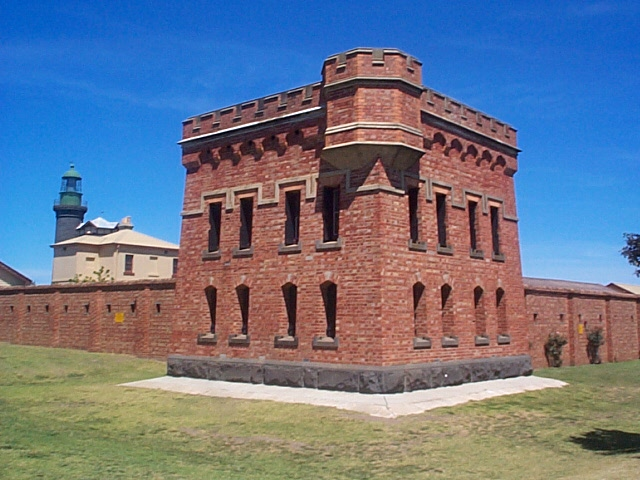
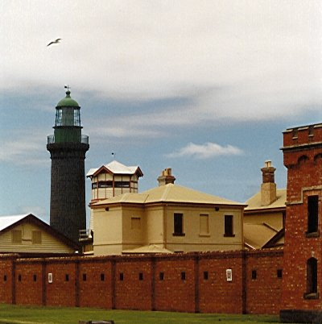
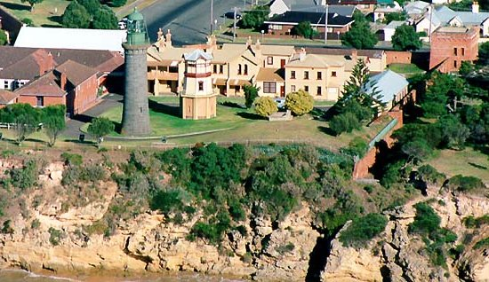
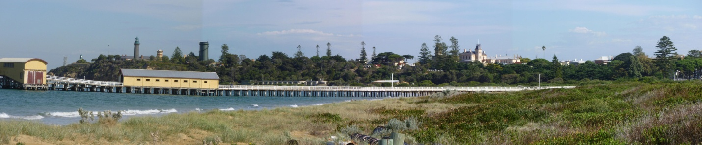
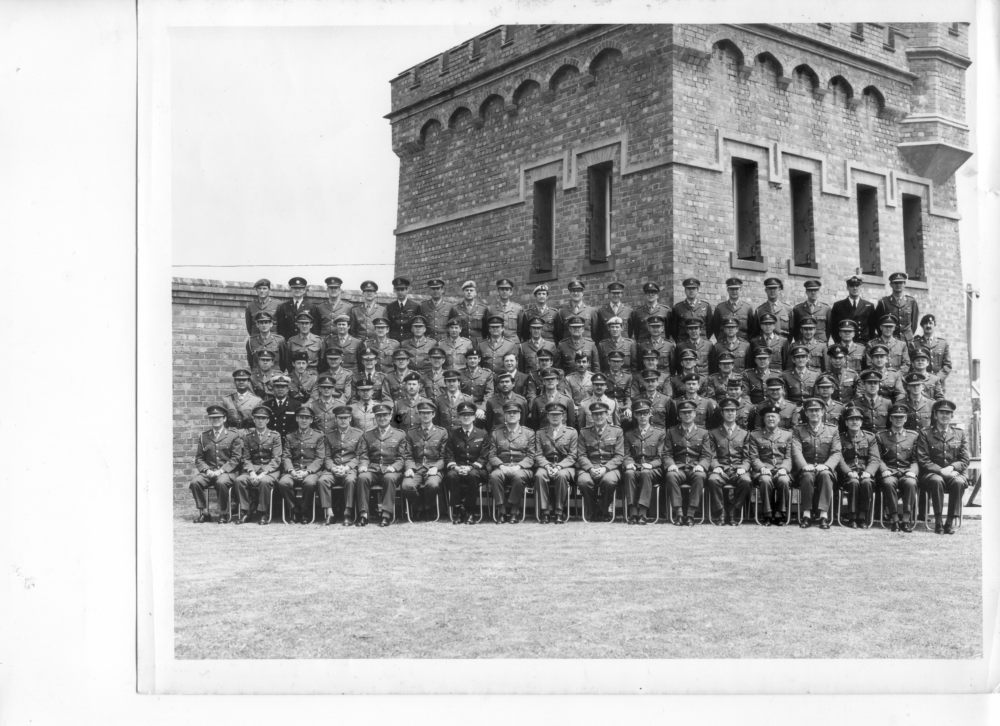
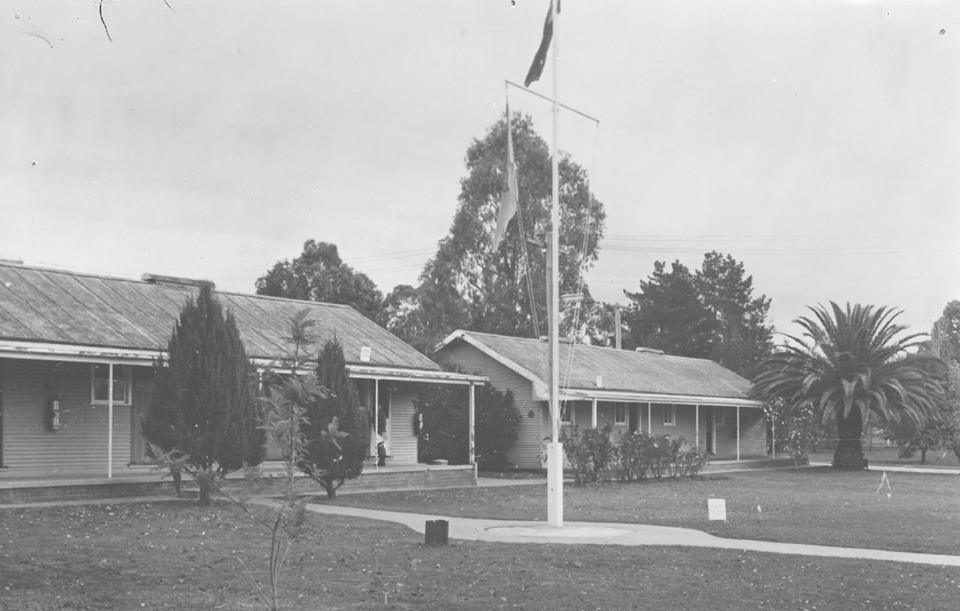
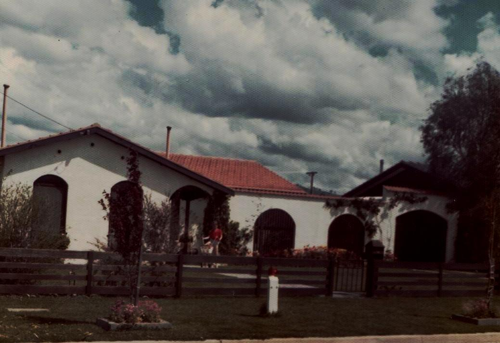
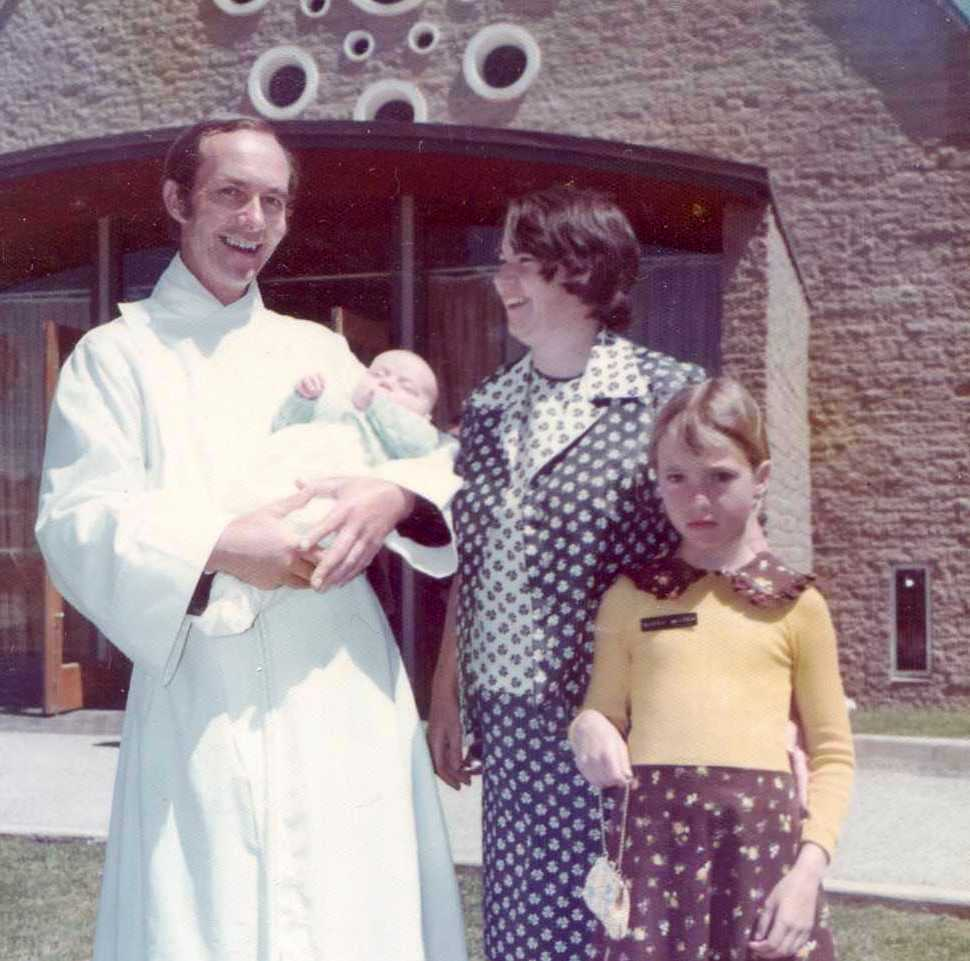
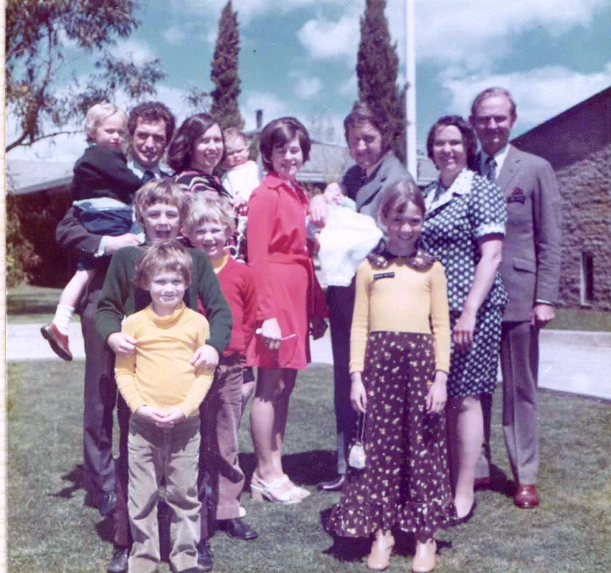

PREFACE
I had indicated to my Director Colonel Frank Buckland during his visit to Vietnam (Nui Dat) that I would be interested in attending the Australian Staff College at some time in the future and he had responded that if I were to meet all the requirements for attendance he would give my application his support and that of the Corps. While in Singapore I completed and passed the written examinations for promotion to Major and was duly promoted to temporary Major before departing Singapore. The further requirement for entry to Staff College was to attend the Tactics 3 Course at the Land Warfare Centre at Canungra in southern Queensland and I did so in October 1970. Wendy and I and five year old Sarah departed Singapore in early January 1971 flying to Perth and thence to Melbourne by car across the Eyre Highway and to Queenscliff. My story of our time in Singapore and our departure and trip to Queenscliff is covered in some detail in Part 3 ‘Singapore’ of my Army story.*
THE AUSTRALIAN STAFF COLLEGE – QUEENSCLIFF
At this point I should say a word or two about the Australian Staff College. It was located at Queenscliff in no less than Fort Queenscliff – built during the 1880s to ward off a Russian invasion. It was surrounded by a high triple thickness brick wall and mound full of ammunition tunnels but no ammunition and comprised a number of buildings within, some in red brick and other more temporary timber ones. There was also the ‘Black Lighthouse’, an imposing structure built of black granite blocks imported from the United Kingdom in the 19th century. I presume it made an excellent lookout for the invading Russian navy! The officer’s mess was quite lavish and very comfortable with a huge fireplace in the anteroom. All instructional staff was lieutenant colonels and all students, majors. The commandant was a brigadier. In all there were 71 students including 13 from overseas countries – Indonesia, Thailand, Malaysia, United States, Canada, United Kingdom, New Zealand, Sri Lanka, India, Pakistan and Brunei (he was also a prince but we didn’t mind that).
The historic town of Queenscliff (in the Borough of Queenscliffe – note the ‘e’ at the end of the name of the Borough) lies on a small promontory projecting from the southern end of the Bellarine Peninsula just thirty kilometres south east of the city of Geelong. The tip of the Queenscliff promontory sits directly opposite the narrow entrance to the huge (60kms x 50 kms) Port Phillip Bay at the northern end of which is the City of Melbourne. The entrance to the Bay is four kilometres wide and the actual shipping channel much less than that. The entrance is called ‘The Rip’ which aptly describes its main characteristic – it is very dangerous. On the northern tip of The Rip (Point Lonsdale) is the village of Point Lonsdale. We were to live at Point Lonsdale at 30 Bailieu Street.
Our little home for the next ten months was somebody’s summer holiday home. The owners with many other owners of holiday cottages had offered it to the College through an agent for renting out to College students for the duration of the College term. We had been offered 30 Bailieu Street even while we were still in Singapore and of course we accepted it sight unseen. We had little choice. The rent seemed reasonable and we may have been entitled to a small rental allowance but I am not certain of that. Once the allocation had been made we were to deal directly with the agency of the name Butler and King in the main street of Point Lonsdale opposite the bay beach, an elderly gentleman who seemed to know more about Staff College than I did or I suspect most of the students. In fact the whole community of Point Lonsdale – butchers, bakers, candlestick makers, and house cleaners – all seemed to know what we were about; when husbands were away on exercise (frequently), when we were returning – it was all quite incredible. Of course they had all lived with the annual turn-over of Staff College students and the routine of the College where many were employed for as long as the College had been at the Fort. Butler and King put me in touch with the present tenant, a Major Ian Willis who kindly sent me a sketch plan of the house and a listing of its advantages and disadvantages – the latter in Wendy’s mind numerous. Our cottage at 20 Baileiu Street was timber framed and clad in fibro sheeting; ideal for summer residence but a bit chilly in the winter. The small block of land on which it was located was surrounded by thick – almost impenetrable two of three metre high coastal scrub which probably gave our cottage some protection from the winter winds and certainly afforded privacy. We were only a short walk to the bay beach and the shops opposite which were quite adequate for most purposes. The surf beach was not much further at the end of Bailieu Street with a timbered walk way across the sand hills and onto the beach. Our cottage was said to be furnished but it was very basic and we found it necessary to call forward certain items from storage in Sydney that included the refrigerator and lawn mower. The former arrived without shelves and the latter had clearly been much used. Not all the students lived a t Point Lonsdale of course; many lived in Queenscliff itself and some at Ocean Grove further along the coast to the west.
We were very happy in our little fibro cottage buried in the coastal scrub. We entertained a lot as one does at Staff College although it was a rude shock after Singapore cleaning and washing up after a dinner party for 16 or so – often till 2.00am. I would play God Save the Queen at midnight signalling that it was time for everyone to go. It might take a further hour for the ‘hint’ to sink in.
Sarah was to attend the Point Lonsdale Primary School in her first year –‘Prep’ as they called it in Victoria. From Singapore I had written to the school principal to advise the enrolment of my daughter and I had a pleasant reply back from Mr Keith Abbey acknowledging and advising that I needed to do nothing until to commencement of the school year on the 2nd February 1971. The school was located on Bowen Road Point Lonsdale in what could only be described as a coastal setting on quite large grounds. The school buildings were in no way imposing but as it turned out very adequate. The Principal Keith Abbey was a very pleasant person. His teaching staff was not large but then neither was the pupil population, nearly half of whom were army children from the College including those of overseas students. The College ran a bus to all of our homes to pick up the children each day, take them to school and bring them home again. I think Sarah had to walk to the corner for the pick-up and then home again from that point in the afternoon, a distance of no more than a hundred yards. The school’s optional uniform was modest and inexpensive. As far as I could tell, Sarah enjoyed her first year of schooling and readily made friends.
The Course
Of course I wasn’t at Staffers just to have a good time although there was plenty of that. In fact I had periods of intense busyness and activity with assignments required to be in student boxes by midnight and much more. Unfortunately I have not retained the detailed syllabus or programme of my year so I have to rely on memory. Perhaps had I done so my writing would have been incredibly boring for any non-military person? The year was divided into five terms of two months each with each term concentrating on a particular phase of warfare – counter insurgency, defence and withdrawal, attack and others I have forgotten. We studied military history, military writing, administration, tactics, world strategy, political systems and did assignments on all of these. We did numerous TEWTs (tactical exercises without troops – a military art form) military intelligence (some say the expression is a classic oxymoron, a contradiction in terms), the role and functions of the arms and services – Engineers, Armour, Artillery, Aviation, Supply, Transport, Ordnance and even the smaller specialist corps – even survey got an honourable mention. We had lectures from heads of corps, ASIO, ASIS and other ‘cloak and dagger’ organisations. We did debates and especially we did military appreciations – another military art form. Thankfully I was familiar with many of these as a result of promotion exams and Tac 3 and various other courses I had done over the years – more familiar than some others I suspected. My twelve months of active service in Vietnam gave me a ‘feet on the ground’ realism about much of this.
Many of our TEWTs were some distance away in all sorts of terrain, sometimes requiring an overnight stay in a nearby motel. I remember doing one on the problem of a river crossing attack on the Goulburn River. We stayed at a nice motel in Molesworth or Mansfield on that occasion – we always stayed at nice places. There were many others.
Written appreciations and writings of other sorts – operation orders and instructions frequently preceded or followed a TEWT. I include a list of these ‘Student Exercises’ to give some idea of what Staff College was all about.......
March 71 (our first); Exercise ‘Straight Ahead’ – an appreciation on an attack by a Task Force at Tallarook, Victoria. My DS grading was satisfactory but plenty of red ink. DS (Directing Staff – all Lieutenant Colonels) only had red pens!
April 71 – Exercise ‘Letter Writing’ a letter from a Brigadier (Brig I.A.M. Wright) concerning discipline – unauthorised statements to the press. Grading satisfactory – only a little red ink.
April 71 – Exercise Carpet Bagger – an Operation Order concerning ‘denial of the enemy the high ground lying south of the Princes Highway between the divisional boundary and Bass Strait. This was a defensive operation. Grading – a good effort.
April 71 – Exercise Service Paper (why was it called that?) I chose to produce my paper on ‘Posting Turbulence’ an occurrence in the army when postings occur at such frequency (less than two years) that families are subject to extreme hardship and marriage break down and the ability of the army to carry out its role suffers. My DS comment was satisfactory but too discursive. But then it was a subject close to my heart!
May 71 – Exercise Writing a Book Review – I chose a ‘not too long book’ from the Staff College library on the American Alliance. To my surprise the book awakened in me an interest in the relationship with the United States engendered during World War Two following on to the occupation of Japan under General MacArthur leading to the ANZUS pact and our tendency to follow the United States into every conflict they have been involved it thereafter. My conclusion was that we needed to re-appraise this approach (I said this back in 1971!). Again, a satisfactory grading. Nothing wrong with satisfactory – I came to understand that many fell below that mark.
May 71 – Exercise Intelligence Collection – in army jargon an ‘INTSUM’ dealing with the Enemy Army. This was a syndicate exercise but I seem to have been the chief scribe. An enemy build-up was occurring south of Geelong and there had been a number of incidents. From those incidents we had to determine the enemy’s intent and likely action. This was the only exercise where I produced (with the help of others) large map overlays showing enemy (in red) and friendly (in blue) dispositions. Because it was a syndicate exercise there was no grading and no red ink.
June 71 – Exercise ‘Pipe Opener’; a defence Appreciation. This was a classic defence appreciation of an area bounded by the Barwon River and the area occupied by two Task Forces, (A Task Force at that time was a flexible brigade sized formation; a term no longer used) Again I was graded satisfactory with little red ink.
June 71 – Exercise Tropic Trial – an Operation Instruction. (There is a difference between an Operation Instruction and an Operation Order). The narrative was set in New Guinea at Lae and Singorkai and a number of other locations on the Huon Peninsula. The mission was to establish a base on the Huon Peninsula from which divisional operations could be carried out. No gradings were given for some reason – maybe not assessed.
June 71 – Essay – a chosen subject. Mine was titled ‘AUSTRALIA CO-ORDINATED; - A National System of Co-ordinates in Australia. It was sent to the Australian Army Journal for publication and then referred to Survey Directorate for comment. Unfortunately my Directorate refused publication – no reason given.
July 71 – Letter writing exercise (not sure whether the topic was given) Mine was to a fictitious Lt Col B.C. Smith, ex advisor to the South Vietnamese Army requesting that he address a number of officers on his experience. A second letter dealt with 8RAR commitments. It contained an annex detailing 8 RAR tasks (all fictitious).
July 71 – Exercise ‘Sat Cong’. This was a counter-insurgency operation set in Vietnam. It was a sub-syndicate exercise with six contributors sharing components of the total Operation Order. I was nominally the GSO 2 of 2 Task Force and responsible for the Op Order less Administration and Coordination Instructions. I was also responsible for overall coordination – a somewhat onerous job given the heavy weight individuals I had in the sub-syndicate. The end product was less than satisfactory and not graded – it was panned by the DS. There was some consolation in other sub-syndicate submissions that received similar or worse DS comment.
August 71 – Brief of a File – Brief for the Director of Accommodation and Works – Housing for officers at Heathcote. Actually got a ‘Good’ grading for this one.
August 71 – Military History – a Service Paper on Military History – its Place in Professional Military Education etc. It was a lengthy paper and again I got a ‘good’ grading.
September 71 – a Divisional Attack Appreciation. This was a joint exercise. My partner was Major Brian Doyle, an Intelligence officer (whom I found at times insufferable). We received a satisfactory grading. I did the supporting map overlays in my best draughting style. I think they were pretty good – so did the DS.
October 71 – Exercise ‘Trojan Horse’ – an overlay Operation Order. I believe I did a fine job – draughting skills can be quite an asset. The DS comment read – ‘I have despoiled a classical presentation with my red pen but you have said much too much. Your overlay should say it for you. Regardless of this it is a pleasure to get work prepared to this high standard. Grading good.
October 71 – A service paper in the form of a critique of Staff College training techniques directed to ‘Training Aid Needs’. I think most students would have taken this approach since as the months passed it was often a topic of conversation between students. My grading was satisfactory and most DS comment was directed at expression (sentences too long) and not to my argument. This was the last of our written assignments for the year.
The first lecture after lunch was nearly always Military Writing (although there is nothing special about military writing to distinguish it from simply good English usage although it is fairly disciplined). The lectures were given by an Educational Corps Lieutenant Colonel – Lt Col Roger Jones. Being always the first lecture after lunch I had a tendency to fall asleep – I always have done. This could be a matter of embarrassment but I had a few mates. Roger would roll on regardless and despite my tendency to sleep during part of his lecture I learnt a great deal from him and I believe my writing improved immeasurably.
It had been a tradition of Staff College to publish a year book with the title ‘Took rook’, presumably the cry of the owl, the emblem of the Australian Staff College meaning military wisdom. Most Military Staff Colleges around the world used the owl in various shapes and forms as their emblem. Ours was the ‘killer owl’ – how appropriate! Anyhow, Tookarook contains brief resumes on all students and staff with various other contributions from students, mostly amusing pieces. It also contains details of the many extra-curricula activities undertaken by students and wives and I will get onto those later. In each of the short DS and student resumes there is a line or two as follows: ‘best remembered for’; ‘favourite saying’ and ‘ambition’. Roger Jones was best remembered for his complicated explanation of simple logic and his ambition was ‘to be simple, direct, correct, economic, natural, coherent, cogent and logical’. I think the latter says a great deal about Roger and in a sense says a lot about military writing – it needs to be all of that.
Each student syndicate was allocated a specific DS for the duration of the term then the DS changed. The allocated DS didn’t necessarily take all lessons or TEWTs or whatever else; those with specialised knowledge such as ‘armour’ or ‘communications’ would step in and take those periods dealing with their specialty. Hence one got to know most of the DS both in the lecture room, field and of course the Mess which I will deal with later. I got on quite well with all of the DS although some didn’t. I think they were a little non-plussed at having a surveyor in their midst and often gave me a little extra after a lesson if they thought I might need it. Mostly I didn’t but always accepted their added knowledge gratefully. In fact I needed all I could get. I guess in their minds the question was ‘why a surveyor and map maker? Why does he need all this? Nevertheless, in my subsequent career it was invaluable. It taught me a lot about the army – everything in fact and I thoroughly enjoyed the experience. Perhaps my subsequent career reflected this. I wasn’t the first surveyor to go to Staff College, Keith Todd did so in 1966, my first year in Vietnam (I have mentioned this previously). A few others followed me in later years.
Engineer Intelligence in the Australian Army – my joint study project and thesis
A major project for me that lasted most of my eleven months at Staff College was my Study Project, sometimes called a Staff College thesis that I have talked about before but now is the time to explain it in more detail. ‘Engineer Intelligence’ was its title and it was a topic I had given considerable thought to since Vietnam days. I have already mentioned the help I had from Major Alan Bachelor in Singapore in furnishing me with a confidential British Army paper on the same subject and that had really set me on the course I was to follow, assuring me that I was on sound ground. I had seen the approach given to the subject by the Americans in Vietnam, not so much at the immediate tactical and strategic level but in preparation for post-war reconstruction. I guess they really thought they were going to win that one in 1966/67 although by 1971 that was not looking a likely outcome. Nevertheless, we still had an Australian commitment there of nearly 10,000 men. So it was to be Engineer Intelligence for me, a topic that translated into what was really terrain intelligence and ‘going maps’ in the crudest of terms. Armies need to understand terrain and the ordinary topographic map as good as it is does not provide sufficient information on how to get there cross country – vegetation densities, boggy ground which tanks and armoured vehicles may need to avoid, possible creek or watercourse crossings, water depth and width in each of the seasons, where Bailey Bridges might be used or floating pontoons and much else.
This was a joint effort between Major John Kemp and me. John was an experienced military engineer, Had served in Vietnam and came to Staff College with his wife Judy (who had picked up a pronounced American accent – but not John who remained an an Aussie) from a two year posting to the US. Tookarook records John as best remembered for his violent lectures, his favourite saying ‘etcetera, etcetera’ and his ambition to sleep in. He had three rambunctious boys of close age. Despite this it was not the John I came to know quite well a like a great deal. I found him very mild mannered, very prepared to compromise and always recognised that the topic was mine and he had jumped aboard – he gave me due deference. His input to the project was at the very practical level. As for his violent lectures, I never experienced one but I could imagine how he might have come across. He was a big man, a sort of large head supported on a strong almost ‘bull neck’ and he once played Australian football with Geelong – while he was at Duntroon – yes, a Duntroon graduate – the elite! John had an interesting side interest. It was non-lethal warfare. I am not sure quite what that meant – put the enemy to sleep perhaps. His football career came to an end when he had a serious accident that nearly took his life commuting to Geelong from Duntroon and back on his motor bike. All that was well and truly behind him when he came to Staff College. We became good friends and there was no one I preferred working with in syndicate than John Kemp, We have kept in touch over the years.
To come back to the very nature of our study assignment I will quote a few relevant sentences from our introduction to the project......
- Engineer intelligence is accepted as being of major importance by armies of the world and yet, despite the fact that a frequent need for engineer intelligence arises at all levels of command, the Australian Army pays scant attention to its collection and production.
- Nowhere in Australian doctrine is Engineer Intelligence defined.
- The authors of this paper......have been dismayed at the paucity of Engineer Intelligence available to commanders preparing for overseas operations. Without exception in Korea, Malaysia, Sabah, Thailand, New Guinea and even on the Australian mainland, military commanders at all levels and engaged in a diversity of operations have suffered and have been embarrassed by the lack of timely Engineer Intelligence during the critical planning stage.
- At Gallipoli the ANZAC Force commanders had little knowledge of what lay beyond the beaches.
- Despite fifty years of colonial administration in Papua, scant knowledge of the hinterland was held in 1942 by either the Administration in Port Moresby or the Australian Government in Canberra. Although our general level of intelligence in Papua New Guinea is now much better than it was in 1942, the detail needed to plan effective military operations is still lacking ( Postscript: The 1:100,000 fully contoured map coverage largely took place after my year at Staff College)
The foregoing was the springboard from which John and I launched our paper which when typed up ran to 59 pages. The College classified it as confidential and our DS, Lt Col Ralph Paramor gave it an excellent grading. Our chosen topic was taken very seriously and it finally led to some changes in army doctrine but it took many years.
About a year later I had a memo from John Kemp who had been posted to Army Headquarters (AHQ) in Canberra and was somewhat closer to the nerve centres than I was in my quiet backwater at the School of Military Survey at Bonegilla, Victoria, The memo simply read ‘Dear Bob – It appears our efforts were not for nought after all.’ The memo enclosed a letter (confidential) to all of the branches of AHQ signed off by the Chief of Operations, Major General Stewart Graham making reference to a confidential letter from the Director of Military Intelligence which opened with the statement ‘There is at present a major gap in the military intelligence collection system in Australia. There is no current policy on, or a system for the collection and compilation of information about the mainland of Australia, This function is not included in the charter of JTC (Joint Intelligence Centre)......This shortcoming was brought to notice again recently by the circulation of a 1971 Staff College thesis which highlights the lack of Engineer Intelligence on resources and topography available within the Army’
Did all this lead to anything at all? In a word, no! As far as I am aware nothing changed. If it was referred to our Survey Directorate and I do not know whether it was, I am sure it would have been given short shrift – no interest at all and probably it would have been put down to Skitch trying to stir the possum. But of course there was little my own directorate could do about it. Their charter was that of standard topographical mapping of the Australian mainland in conjunction with civil agencies and the surrounding territories of PNG and the Pacific, not to mention the developing foreign aid commitment to Indonesia. As a final post script and bringing the issue to the present day (2013) the remnant of the old Survey Corps that demised in 1996, the 1st Topographical Survey Squadron (Royal Australian Engineers) based at Enoggera Queensland has introduced a Geospatial Imagery Analysis Troop commanded by an Intelligence Corps captain – in other words, a modern version of Engineer Intelligence.
Papua New Guinea
I have no record that I can find as to when this took place but I think it was mid-year, maybe July/August. It had always been a tradition of Staff College to undertake such a trip and some in the past had been further afield. But Papua New Guinea it was to be our lot. In 1971 it was still the Territory of Papua and New Guinea – The Papuan part was a part of Australia, the New Guinea part, pre WW1 it was German New Guinea then it became the Mandated Territory and later, a United Nations Trust Territory. But in effect it was all ours to exploit as we chose – but not for long! Independence was on the cards but ignored by most.
But back to our trip. We went through an on-again off-again period leading up to the trip; the Army with its expensive embroilment in Vietnam had entered a phase of financial stringency and it was finally resolved to fly us there by C130 (Hercules) transport plane designed for carrying tanks and bulldozers. It had red netting sling type seating down either side and back to back seating down the centre. Previous courses apparently had flown chartered civil air. I could hardly complain; after all Wendy had flown C130 to Ceylon and back during our penultimate month in Singapore and I had winged C130 back from Vietnam! But of course there were those who did – majors can be a complaining lot if their notions of what is appropriate for officers are ignored. But it was to be C130 or no mid-course trip at all.
We were bussed to Mangalore to emplane (that means board an aeroplane) where there was an old windblown strip capable of handling a C130 and a long and somewhat tedious and uncomfortable trip to Port Moresby arriving late afternoon. We were accommodated at Murray Barracks, then a very beautiful location with flowering tropical gardens well maintained, open living quarters and many facilities. The mess was a spacious building with comfortable cane furniture and verandas that looked out to the north and the Owen Stanley Range over which the Australian diggers had toiled backwards and forwards across the Kokoda Track. I remember standing on the veranda of the mess with our American student Major Fred McConville, Fred remarking ‘this must be the most unlikely place on Earth for me, an American to visit. Had someone said to me twelve months ago that in twelve months time you will be in a place I didn’t even know existed looking out at such a sight I could not have believed them’. (Or words to that effect).
I don’t of course remember our exact itinerary throughout that week. We had been allocated two Caribou light transport aircraft that have very short takeoff and landing characteristics to take us to many places in New Guinea – Goroka, Popondetta, Lae, Madang, Aitipe, maybe Wewak and another village high on the range and very close to the Indonesian (then Irian Jaya) border, where the landing strip must have had a one in twenty slope. I recall the District Officer emerging from his bungalow astonished to see two such large aircraft landing and coming to rest on his strip designed for light aircraft discharging seventy military officers. Of course we were expected and I wondered how he thought we would get there – trek maybe! Nevertheless, it was a bit scary and some of our overseas students were left wondering whether they would ever get home again.
We visited several of the World War 2 battlefields and were briefed from vantage points the course of the battle – Gona, Sanananda, Wau, Salamaua, maybe others. We mostly stayed in very well established military barracks – at Goroka in a hotel. At Goroka from our hotel balcony we watched village people in traditional dress bringing produce to the markets – very colourful and for our overseas students quite remarkable. Many photos were taken. Catering for such a large number of visitors was a problem and often it was an outdoor barbecue for lunch and dinner at night. We were briefed by both indigenous leaders and senior officers of the Administration, then still very colonial. Most saw the country moving towards at least home rule but clearly total independence was thought to be a long way off. It was closer than many would imagine. At Lae, staying in a well established army barracks on the edge of the town a few of us walked to the quite famous Cecil Hotel. It was a rather different Cecil that the one where I had stayed in 1956.
Back in Moresby we stayed and were well provided for at the Goldie River camp, then the base of the Pacific Island Regiment (1 PIR) Our briefing there was at least in part given by our student Major Don Gillies who had come to Staff College direct from the PIR and still wore (proudly) the green beret of the PIR. We visited the Bomana War Cemetery, very beautiful and well maintained by the Australian War Graves Commission. We spent some time – had lunch no doubt, at the headquarters of the Royal Papuan Police who were transiting from being lap-lap wearing ‘polis bois’ to trouser wearing policemen. We watched a drill display on their parade ground and I was dismayed to find that the administration had brought in a number of police instructors from South Africa, very Afrikaans. Perhaps they were effective but I wondered what their approach might be but then, could they be worse than some of the Aussie colonial masters who had ruled for so long?
Our trip was nearly over and we had a free day to explore Port Moresby. I presume we were back at Murray Barracks. Some hung around the mess all day imbibing. I certainly took the opportunity to see more of what was a very attractive city at that time, well maintained and clean. The harbour and surrounds were quite beautiful and the whole place reeked of World War 2 history. Most of us had picked up a few curios from village markets here and there during our touring. Mine were quite small, a trinket box that still sits on my desk full of pencils and pens, a string of black coral beads for Wendy – quite rare but not too expensive – a Trobiand Island ebony carved walking stick that broke in half a few years later and maybe one or two other small things. The following day passing through customs I bought my usual duty free entitlements and a small transistor kitchen radio which was for Kevin and Myrie Moody – arranged by Wendy. It was good quality and quite cheap in Aussie dollars. The trip back in the Hercules was tedious and uncomfortable. I spent some time writing up one of my assignments – the book review I think. Brigadier Bogle (who took the trip with us) was quite impressed – plenty of ‘brownie’ points in that one, Bob – at least some others thought so! I think this time we went directly to Laverton, not too far from the College and arrived back home in the late evening.
Another TEWT and a pleasant few days
The only other significant trip I recall was one I previously mentioned where our TEWT involved a river crossing. We stayed at Mansfield or Molesworth, the former I think. We were away three nights – the first on our arrival, the second inspecting the area of the attack (only on the south side – the enemy had occupied the north side) and preparing our outline plan and the third presenting our solutions as an outline plan. My partner in this venture was none other than John Kemp and he and I decided on a full frontal attack securing the one and only bridge across the river. We believed the element of surprise would carry the day. The alternative was to cross the river some distance to the west and mount a flanking attack, generally preferred by army tacticians – flanks a seen to be vulnerable. However, our reading of the terrain was that such an approach with armour would be noisy and the ground on the northern side, gleaned from the map examination, was boggy with several creeks flowing into the river that had to be negotiated. Such an approach would be time consuming giving the enemy considerable time to react – and so on! Needless to say that was the solution adopted by the others in our syndicate. John and I were the only ones to go full the full frontal –up the centre with bags of smoke’ approach. John undertook the presentation which invited a few question like ‘what do you expect your attrition rate to be (i.e. the number of your troops KIA or WIA) and of course why did you discard a flanking attack? John handled it well although it left the DS shaking their heads somewhat. The thing about TEWTS is that no single solution is necessarily wrong unless there is clear evidence that significant factors have not been taken into account.
We headed back to the College after three very pleasant days away.
The College social life
One could participate in the social activities of the College to the extent that one wished although it could be all in or all out. We were very much all in at least until the arrival Robert in September when we modified to some extent. Some students who lived in Melbourne chose not to move into quarters in Queenscliff, Point Lonsdale or somewhere else near by but simply take a room at the College and commute to Melbourne at weekends. I guess it would be tempting to do that if one was comfortably settled in Melbourne with children at school. I suspect had that been our own circumstance we would have remained where we were. So, what did the social side of the College comprise? There were many ongoing activities.
First of all there was the Officers Mess and many evening activities were Mess centred. Monthly dining-in nights for members and sometimes with wives (we didn’t have ‘partners’ in those days although ‘girl friends’ could be invited but only by single officers). These were conducted on traditional lines – mess kit was always worn although some for whatever reason used ‘mess undress’.1 Mess kit was an item of uniform that had to be bought at member’s own expense. There were special nights in the mess, the international nights, hosted by our international students – a Canadian night hosted by Tom de Faye where we drank ‘Moose Milk’, an American night, an Indian/Sinhalese night and so on.
Syndicate based home entertainment was an unwritten rule. Each syndicate came together for at least one such occasion during its tenure. One member would volunteer their home for an afternoon or evening with the other members of the syndicate contributing dishes of their choosing. Mostly, I think, the wives would have a meeting to coordinate the event to ensure that the dishes brought would be at least complementary. Wendy and I hosted at least one such occasion. The open nature of our dwelling at 30 Bailieu Street lent itself to such entertainment. Of course the syndicate’s Directing Staff were always invited and usually attended as well as some other DS who were not specifically tied to a syndicate such as our educational DS, Lieutenant Colonel Roger Jones. Then there were private parties with invited friends, two or three couples, for some maybe more. Several such occasions took place at 30 Bailieu Street, mostly inviting those couples with whom Wendy associated at golf or other ‘wive’s events’. I was always inclined to ask the Kemps although I sometimes felt that Wendy was not all that sure about Judy Kemp. Of course John and I saw quite a lot of each other out of College hours working and planning, exchanging drafts, of our Engineer Intelligence study project. The Behans, Ron and Judy lived diagonally opposite Wendy and me and we often popped in to their home or they to ours for a pre-dinner drink during what they termed the ‘ulcer hour’ that hour before dinner getting the children fed and bedded. There were other ‘pop in’ arrangements. Paul and Jan Jones were often on their patio as Wendy and I with Sarah on her little two wheeler bike from Singapore went past on our evening walk and always called us in to join them. I think Wendy played golf with Jan; I am not sure I had all that much in common with Paul – an Armoured Corps ‘elitist’. The invitation was always for a sherry – a Mildara medium sherry called ‘Chestnut Teal’ – that became a long term favourite of mine also.
There were many activities for the wives under the general supervision and coordination of one particular staff, Captain Neville Butler, the Quartermaster. Nev became known as ‘Wive’s Happiness’. Why the Quartermaster – I suspect that it might have been a role assigned to the DAA&QMG Major Frank Heweston who delegated it to the QM. Heweston was not exactly student oriented although his wife Jeanie ran a couple of wives groups; bridge I think. Tookarook tells me that specific ladies activities included golf, squash, tennis, badminton, fencing, mahjong and bridge. Also there was an arts group, a ladies charity group that raised money for the ‘Cottage by the Sea’ and a drama group, the latter open to males also. Wendy played golf frequently and managed to bring her handicap down to the low teens. She assisted Lyn Ireland in organising the ladies golfing competitions. She played bridge until she got sick of Jeanne Heweston’s overbearing manner.
We fellows also had our own very optional programme. Wednesday afternoons were specifically sports afternoons. I participated in golf for want of something to do on the beautiful Point Lonsdale Golf Course – always green! My mark of achievement at golf was to score one stableford point once (recorded in Tookarook). I am sure that it took me twice as many strokes to get around the course as anyone else. There were other options such as badminton and tennis and I thought about badminton having played consistently many years before but as it turned out I had other things to fill in my ‘sports’ afternoon. Pat Marshall-Cormack ran ‘Motor Sports 71. Pat was a great car lover – a fanatic one, one might say. He owned a two tone Humber Super Snipe and maintained it in ‘as new’ condition. Its quite large engine would not have had a spec of misplaced oil on it or grit of any kind and its bodywork and upholstery looked as though it had just come off the showroom floor, despite having close to 100,000 miles on the odometer. In Tookarook Pat is best remembered for ‘his beautiful beautiful car’ and his ambition as ‘to own a self polishing car’ I don’t altogether agree with the latter. Polishing his car was Pat’s form of relaxation and he would be lost with a self polishing car. Anyhow, Pat organised three car rallies throughout the year that Wendy and I participated in; on one occasion we had with us the Thai student, Prachong – he only had one name and was the only Lieutenant Colonel student on the course. Wendy and I with Prachong won the second of the car rallies and received some little carved statue which we kept for many years but finally passed it on to some charitable organisation. The ladies had a timed reversing competition between bales of hay. Wendy didn’t do too well at that and in any case all place getters were driving minis or similar. Wendy was just too cautious.
So – what else did we do? Wine bottlings were very popular. Casks (like a barrel) of indifferent red and white were purchased from one of the many wineries on the Bellarine Peninsula and crates of wine bottles. A production line would be set up and labels with the name ‘Owley’ and the drawing of an owl were produced identifying the contents by grape type. The bottles had to be individually sterilised with some approved fluid, then filled and labelled then corked and sold. One could sample by the glass full throughout the afternoon without charge. It was a process I took with me to my next posting.
Sarah enjoyed the weekend activities – the car rallies, the wine bottlings and other daytime activities within the Fort. Provision was always made for children and there were many of them, as many or maybe more than there were students. The significance of the Fort and the lighthouse were not lost on her and I tried to explain why it was like it was and its history. Beyond the Fort we went for walks and drives to other places of historic interest, Buckley’s cave down near the rocky point. Sarah enjoyed the quiet bayside beach and picking our way around the rock pools and the strange inhabitants within these. Children’s birthday parties were quite frequent and Sarah attended a number of these, sometimes not without a degree of trepidation. Sarah accepted that she was part of an army family and for her that was normality although different to others from her school who were not army. I don’t think there was much interplay at school between army and non-army.
Our social life and outings had to be modified somewhat after the arrival of Robert in September but more on that later.
A Survey Job
I think this little task came to me via Lieutenant Colonel Tom Martin (RNZArtillery) and my first DS. Tom was a co-opted army person on the parents and friends committee of the Point Lonsdale Primary School. At least half of the school enrolment was army children from the College – hence an army rep. Apparently the school principal Keith Abbey (one of the bestI have known over the years) had let it be known that a detailed plan of the school including contours would be an invaluable asset for future planning and various development schemes he had in mind. Colonel Martin knowing well he had a surveyor in his syndicate approached me and suggested that taking on this assignment would do me no harm. Apparently he had briefed the Commandant and Brigadier Bogle had said to the effect ‘approach Skitch and if he is willing it can happen but don’t pressure him’.
I couldn’t do it on my own so who better than John Kemp, an engineer to be my assistant. John readily agreed. Also I needed equipment so I had the College send a ‘signal)’ (telex) to the Survey Regiment at Bendigo requesting a theodolite and legs, a dumpy level and legs, a staff (for levelling), a Curta hand calculator and a 100 metre chain (measuring tape). I was not sure what the Regiment would make of all that so I phoned the CO, Don Ridge and briefed him more fully. The equipment duly arrived. John and I agreed that we would do the job on a few successive sports afternoons (John also despite his physique was not strong on conventional sport). I had recced the school site and talked to Keith Abbey, checked the school boundaries and found that they were well marked thank goodness. The Principal was able to provide an old boundary plan with an outline of some of the buildings. The extent of the school grounds was several acres – up to ten maybe – most of it not used at all; perhaps for nature excursions for the children. It was nearly all coastal sandhill covered in thick scrub other than that which had been cleared on the flat for buildings and playing field. It was no easy job. The boundary plan seemed to conform with what was on the ground so it was mainly a matter of infill. I adopted a contour interval of one or two metres, sufficient to show the shape of the ground and over the next few weeks John and I carried out the work – established a grid, ran lines of levels and measured in the scatter of buildings. I maintained a progressive plot at the College in their small draughting room – yes, the College had a drawing board or two, basic draughting equipment and I was able to produce a competent looking plan showing boundaries, buildings, contours and areas of scrub with appropriate annotations. I was quite pleased with the effort but it was time consuming and giving my College work some priority it took two or three months to complete. I gave the finished product, a trace on paper with several dyeline copies to Lieutenant Colonel Martin who duly presented them to the school. I may have had a further discussion with Keith Abbey and he often caught up with John and me when we were working on the job. So much for all that. I don’t think anyone other than John and me appreciated how much work was involved and I don’t think any kudos resulted from the effort.
Occasional trips to Melbourne and our 10th wedding anniversary
We made occasional trips to Melbourne staying with Myrie and Kevin Moody in their home at East Keilor. They had had their home built not long after their wedding about 1963 and Kevin had done quite a bit of work laying concrete paths creating a nice garden and useful back yard that included the inevitable shed and workshop. Kevin and Myrie had a family of two boys, Peter about Sarah’s age and Michael much younger. The house was built of white silicane brick with blue trim. It had a nice appearance. Not far away, a few blocks, Lou and Gillian Sommer lived and of course Kevin’s brother Dennis and Marg Moody in Niddrie, the next suburb back towards the City. Sarah enjoyed our trips to the Moodys and was good mates with Peter and at times could get up to all sorts of trouble together. I am not sure whether it was then or a later occasion when the four of us were out somewhere together (Michael in the pram) and arriving home in the late afternoon to find that the concrete path from the back door to the shed had been part painted by Peter and Sarah – about a third of its length before the paint ran out. Apparently Kevin had left his shed unlocked and Peter had found the large tin of paint about a quarter full. Needless to say Kevin wasn’t all that impressed – neither were Myrie and Wendy. Both Peter and Sarah had copious paint over their hands and clothes but they had had fun..
The 26th August was Wendy and my tenth wedding anniversary and it seems that we had decided to mark the occasion with a gift of significance to each other. I can’t recall quite what the circumstances were that took us to Prahan/Toorak – two very hoi-poloi suburbs where there were lots of antique shops and boutiques. Perhaps the attraction was that the Larnach-Jones (Mary and Tony) who had occupied the unit above ours at Clovelly a few years before, Tony having left the Army, had bought and ran a boutique in Prahan selling all sorts of things. However, whether or not we made contact with the Larnach-Jones, we did not make our purchase there but at an antique shop elsewhere. Wendy had in mind a ‘tantalus’, a lockable device for decanters of spirits – brandy and whisky. I am not sure what attracted Wendy to that but in any case we couldn’t find one that appealed in either price or style. Instead we bought a very nice three bottle sherry stand with three very attractive etched glass sherry decanters.
Robert Matthew Rex arrives
Sarah was to turn six years old in 1971 on the 14th August. For whatever reasons Wendy and I had not succeeded in having a second child and before leaving Singapore we had resolved to adopt and initiate that process as soon as we had settled in Victoria. At that time in Victoria one worked directly with the hospital, not through a government department as in the other States. It was what was called a ‘common law’ system. The hospital arranged the adoption and it was later legalised through the Supreme Court. In 1971 adoption of children usually from unmarried mothers was relatively easy to arrange. Wendy had trained as a midwife at Melbourne’s premier maternity hospital, the Royal Women’s and as a result had some sort of priority awarded in the queue and we were promised that a male baby would be allocated in about August or September. In order to have the adoption subsequently ratified by the court we would need to remain domiciled in Victoria for twelve months from the date of adoption. This of course meant that my post College posting would need to be in Victoria and that duly happened. In the lead up to the adoption we had at least a couple of interviews with the hospital almoner (a rather archaic term) to establish our suitability. The fact that we had a six year old daughter and no further sign of pregnancy since her birth was in our favour.
Robert was born on the 13th August 1971. He was held in the hospital for a statutory period of one month (presumably giving the natural mother time to change her mind) and we received a phone call from the hospital in mid September to come and collect our baby.
Adoption in those days was a brutal process, or at least it has been shown to be in retrospect. Abortion in any shape or form was illegal and adoption was the alternative. Single mothers were often pressured by the hospital almoner to give up their baby for adoption. The cold fact was that there was no support whatsoever for unmarried mothers. I can only hope that that was not the case with our Robert but who knows. At that time there was no way an adopted child in later years could contact a natural mother. The system was absolutely watertight.
None of those thoughts were in our mind when we drove to the Royal Women’s Hospital in Melbourne to meet our little month old baby. We were quite well equipped for the delivery – bassinette in the back of the car, bunny rugs and all the things we needed. We had acquired a pusher/pram from Brian and Cynthia Hughs (I think) and a cot from somewhere else. We had decided on a name without too much trouble reflecting both sides of our respective families. The christening was to take place in the small Anglican Church at Point Lonsdale with John Kemp as Godfather and Ann Nicol as Godmother. The officiating priest was none other than John Potter who had returned to Australia from Singapore only a few weeks before and had been allocated to the Point Lonsdale parish before being moved on to bigger and better things. Following the baptism we had a few of our close associates to our home for a modest morning tea.
I do not recall that the presence of baby Robert in our small home was in any sense a major distraction, no doubt thanks to Wendy’s baby rearing skills. The tempo of our social life certainly diminished. Wendy had contacted an elderly lady whose name I have forgotten who did babysitting as needed and some house cleaning, perhaps helping when we entertained. I certainly recall taking Robert for walks in the pram and he came with Wendy and me to the College when there was a weekend activity. In fact I think these tapered off towards the end of the year.
Securing a married quarter in Wodonga
In July I was advised in a round-about way (a demi-official to my Corps contemporary on course from Director of Survey, Colonel Frank Buckland) that my posting ex Staff College was to be to the School of Military Survey. I was not unhappy with that although I might have preferred a non-corps appointment to start with. (If not unhappy with the posting I was less than happy having that advice passed to me by my course contemporary Frank Thorogood.) Nevertheless I had indicated the School as my first Corps choice and it met a condition that I will go into later. Certainly I did not wish to be posted to the Regiment at Bendigo as a Squadron OC at that stage. Coming out of Staff College and into a Corps appointment had to be approved by the Military Secretary (responsible for all officer postings) and that duly happened when a representative of the Military Secretary visited the College in September with the listing of officer postings. He was available throughout the day for interview by students who may have had an axe to grind. I didn’t and forewent an interview.
I sent a demi-official to the then Chief Instructor of the School, Lieutenant Colonel Harvey Hall asking him to sound out the married quarter situation and he replied that I was second on the married quarter allocation listing and I could expect an allocation in about April 1972. It would be a relatively new State Housing place under the Commonwealth-State Housing Agreement. In my DO I had pointed out that I was to be evicted from my present house at the end of the course and that I wished to avoid having to take temporary accommodation in Wodonga while awaiting the allocation of a quarter. Also that I had two removals to arrange, three in fact, one from Point Lonsdale (this had to be with immediate effect), the second from a repository in Sydney where most of our furniture had been stored for three years and a third from demurrage storage in Sydney this being the furniture we had shipped to Australia from Singapore. With all this could I not be escalated on the list to be allocated the next available quarter? Harvey had alternatively offered some WRAAC accommodation that was not being used that had a couple of bedrooms and a kitchen. We were not too impressed by this and in the event we were allocated a quarter in early January at number 10 Morrison Street Wodonga. This meant that our Point Lonsdale removal would be to storage in Melbourne or thereabouts and brought forward to Wodonga once we had moved in to Morrison Street. To fill in the gap between our departure from Point Lonsdale and moving in to the Wodonga quarter we planned a catch-up trip to Brisbane with the intent of calling on Rex and Beryl at Tenterfield and then friends in Brisbane. More on that later.
The course continues
We were required to have our study projects finalised by the end of October. John and I certainly met that deadline and it was being progressively typed in the Staff College typing pool. Lieutenant Colonel Ralph Paramore was our assessing DS for the project and he did this progressively section by section in a timely and constructive way. He seemed genuinely pleased with what we had created and John and I were quite optimistic at its outcome and general acceptance. We were not to be disappointed in this regard. The report was finalised and we were given half a dozen copies in Staff College folders, each page and the cover marked ‘Confidential’, perhaps the only student project to be so classified. Copies were sent to the higher echelons of Army Headquarters and subsequent events showed that it was taken seriously. Maybe a copy went to Survey Directorate. If so I never received comment or feedback.
Towards the end of our course the College took on a high charged (and no doubt high charging) management organisation from Melbourne to carry out a student potential test of all students. It was conducted over a weekend which made it somewhat unpopular with the students at large. After a series of talks on the Saturday morning we were given a sheath of papers containing some 850 multi-choice questions. We were told not to dwell on each question – there were no right or wrong responses to each question – but respond to each on what might best be described as ‘gut feeling’. We had four hours to complete all 850 questions and it was essential to complete the lot. For most questions offered responses were all distasteful – it was more a matter of choosing a response that was the least distasteful, what is often described as a ‘a Hobson’s Choice’. The management organisation had brought with them a specially programmed computer (the College were not in anyway computerised at that time and Internet had not even been thought of) so this big fancy grey box of a computer looked pretty impressive. All of our responses were fed into the computer overnight and presumably it chugged and churned all night digesting all seventy student responses – all 850 per student and for each it spat out a result that purported to establish the management potential of each student. I don’t think there was a number score but a descriptor of each persons potential. The top one was ‘Golden Eagle’ that applied to a person who had it all and the only other one that I can remember was ‘Developer’ because that applied to me with the explanation that I had great potential in developing the skills and potential of others. I was quite happy with that and I like to think it fitted. There were only two of three Golden Eagles and the ones I remember were David Gillroy and maybe Bob Fisher. (both achieved Colonel rank) The test was optional for overseas students and only those whose mother tongue undertook it. I think Tom de Faye the Canadian student achieved a Golden Eagle and he was the only student on our course to achieve General rank. None of the categories were derogatory – none were described as ‘dick heads’ with no potential although one category seemed pretty ordinary and about a third of the student seemed to achieve that. I don't think the process had any bearing on our passing or failing Staff College.
The ‘War Game’
This was a week long exercise conducted within the grounds of Fort Queenscliff and to give it realism within the ammunition tunnels of the Fort, brick lined tunnels within and beneath the high surrounding mound that comprised the seaward side of the Fort. Old gun emplacements were still built into the mound but of course no guns. Comprehensive narratives were issued generating a surprisingly realistic atmosphere. It was a twentyfour hour day throughout the game and we generally worked in shifts. I am not sure now whether we went to our homes when not on duty of lived in at the College; I think largely the latter. Certainly we could be awakened at any hour by a runner to report back to our station. Essentially we were organised as a Divisional Headquarters with some elements of a higher Corps Command. Also an enemy. The DS were the exercise control and in effect the ‘enemy’ although some of the students also formed an enemy cell. I was one of those as an enemy intelligence officer. I remember producing reams of reports and signalled messages. I think I was at least a couple of ranks above my worn rank – Colonel perhaps. I was surprised at how ‘real’ the game became in our minds and often in stepping out from the tunnel into broad daylight I felt as if I had stepped into another world. Refreshments were brought in from time to time and I think we went non-tac to go to the mess for a meal. The staff coped with all this quite well. I guess they had been through it all before. Wendy said the whole community of Point Lonsdale seemed to know what was going on, almost as much as we students did.
The final weeks
Our War Game came to an end and with it the end of our year at the Australian Staff College, officially the 10th December. The last couple of weeks, perhaps from the 1st of December we were at a low ebb. Many students, especially those from overseas were making arrangements for their departure.. We had a few general interest lectures and talks in the lecture room but I don’t recall that they amounted to very much. My posting to the School of Military Survey had been confirmed in October as ‘Major (Training Co-ord) and a short time later as Senior Instructor and Second in Command. Closing on Christmas there was a final Christmas dining-in in the Mess and soon after a childrens party with Santa arriving from the black lighthouse leaning out from its upper level with lots of Ho Ho Hos. I guess we all subscribed to the childrens presents under a large Christmas tree. It was organised by a group of wives and I think it may have been Des Ireland in the Santa outfit.
But one final function lingers on in my memory. That was the farewell from the Point Lonsdale Primary School organised by the Principal Keith Abbey and his coterie if teachers. It was a remarkably moving occasion, in the form of a concert where children performed as one might expect – short playlets, poetry recitation, choir items. Sarah was involved in one or two small things – performance wasn’t her strong point – then towards the end each of the children departing the school were individually farewelled, naming their destination and given a small gift all to the background of the choir softly singing ‘Po Atarau’, the Maori farewell song. There weren’t too many dry eyes after that, certainly amongst the Army mums and dads.
The final results
Over the course of a day we were each individually interviewed by Brigadier Bogle and a couple of the DS, Lieutenant Colonel Derek Deighton and Lieutenant Colonel Roger Jones come to mind. Others may have been involved also. It was a long day and we waited around in the mess mainly reading newspapers and magazines, chatting in small groups waiting for our name to be called out. Word spread around as to who the top performers were; who got better than ‘C’ passes. There weren’t many and several were overseas students, Surrinder Singh from India, John Campbell from New Zealand, Tom de Faye from Canada and of the Australian students, David Gilroy and Bob Fisher. Surrinder Singh may have been awarded an ‘A’ pass, if so, the only one to achieve this. The rest of us achieved the usual ‘C’ pass. I was not aware of any abject failures – one does not ‘fail’ Staff College and if that looks like happening the student is quietly retired from the course and returned to his parent Corps for re-posting. This means that we were all entitled to the coveted military post-nominal ‘psc’. My own interview occurred towards the end of the day. Nice words were spoken; I was congratulated on my achievements and told that I was recommended for postings against all staff appointments. Apparently some received recommendations for postings within their own parent Corps. My Corps colleague Fank Thorogood probably received the same but I think he expected more. At least he got the posting he wanted as GSO2 of Staff College – He would be able to pronounce ‘course’ to the assembly of students in the lecture theatre when there was a visiting lecturer..
A rather moving little ceremony took place in the lobby of the Mess involving our Indian student Surrinder Singh and the Pakistan student Tariq Nizami. Unfortunately I did not witness it. The war between India and Pakistan had broken out that week which meant that Singh and Nizami were returning home to fight on opposite sides. The little ceremony involved them kneeling on mats facing each other, bowing their heads and holding hands with a few spoken words in their own language. Those who witnessed it found it very moving – a situation that would not often be repeated in many of the military staff colleges.
Departure
Soon after the course final day – 10th December – most students were on the move as indeed were we, Wendy, Sarah, baby Robert and I, most likely a day or so after the personal items of furniture we had called from storage (eg, the shelfless refrigerator) had been up-lifted. I recall that we had our Benz packed and ready to leave; baby Robert had been fed and was asleep in his bassinette on the kitchen table when we had a visit from the Fishers with their two rambunctious children. Wendy and Jill were good friends and Jill wanted to wave us off. I don’t think Bob Fischer came; he was a pleasant fellow but we were not close. One of the Fisher boys jumped on the bonnet of the Benz slightly denting it to my concealed annoyance but finally we were into the car, Wendy, Sarah and me and backed down the driveway to see Jill waving frantically from the carport. We had left something behind – baby Robert asleep in his bassinette. With much laughter and no little embarrassment we retrieved bassinette and sleeping Robert and finally departed. The Army had generously allowed us an overnight in a motel somewhere and I think we chose to stay in Albury, arriving early evening.
Photos of Fort Queenscliff



AUSTRALIAN STAFF COLLEGE – STUDENT & STAFF PHOTO – Class of 1971 Major Bob Skitch is 11th from the left, second back row.

Our trip north to Brisbane is not one I remember with any great pleasure. We had had a letter from Wendy’s father Rex that stepmother Beryl had kicked up quite a ruckus at our intention to stay at the Bungalow for a few nights on our way through assuming of course that they would like to see our adopted son Robert. This had been arranged with Rex by letter a week or two before. Beryl had described Robert in the most unsavoury terms and Rex felt it best that we not call at Wendy’s old home. We had over-nighted in Tamworth after leaving Albury staying with Aunt Val and then proceeded on to Tenterfield the following day. We had booked into the Royal Hotel/Motel in their two star accommodation and contacted Rex who visited the following morning. He was visibly shaken, looking quite ill. He was not responsive to Robert although at Wendy’s insistence nursed him a while and seemed to soften. I said I should call on Beryl at the Bungalow and although I cannot remember the circumstances that led to it, I did so. I met Beryl in the driveway to the Bungalow and asked may I talk to her but I was met with a stream of abuse during which she made the most outlandish and gross accusations that I would never repeat. I guess it was then that I came to the conclusion that she was an ‘evil’ woman. I tried to defend and get her to see reason and finally I lost my cool completely and soon after returned to our hotel. I felt physically sick and was troubled at leaving Rex there in that miserable circumstance. We spent the rest of the day in Tenterfield visiting one or two of Wendy’s old friends, Terry Kneipp comes to mind. We left for the final leg to Brisbane the following morning.
I am not clear where we stayed in Brisbane but I think it might have been with Shirley and David White. Shirley and Wendy had been student nurses together in the 1950s and presumably we had Christmas with them. It must have been between Christmas and New Year that we had a call from Rex to say that he was at Ballina on his own. Beryl had gone to stay with her son Barry at Wollongong and could we come down. We did so leaving Sarah with the Whites but taking Robert in his much travelled bassinette. It was about a three hour drive to Ballina and we were prepared for an overnight stay, two if necessary. On arrival Rex was clearly distressed and wanted to return to Tenterfield. Beryl had driven to Wollongong in her Mercedes Benz and Rex to Ballina in his big Ford Fairlane. How he managed to do that I have no idea – he was in no condition to drive. While in Ballina I had a call from Beryl’s son Barry who took me to task over the altercation I had with Beryl in Tenterfield. It was a situation I was not proud of and I took it on the chin. I may have responded that Barry should ask his mother what she had said and left it at that. I suspect Barry would have had a fair idea. The outcome was that I drove Rex back to Tenterfield in the Ford and Wendy returned to Brisbane in our Benz. Rex was very agitated on that drive to Tenterfield, fiddling with things on the dashboard – light switches, air conditioning controls (if there were any) – it was an unpleasant trip on that very windy road. I left him at the Bungalow; he said he would be alright. He didn’t want me to stay so I stayed overnight at the Royal again and took the bus back to Brisbane the following morning.
WODONGA – BONEGILLA and the School of Military Survey
4 Morrison Street – our allocated Army Married Quarter
In early January I headed back to Wodonga in the Benz to take over our allocated married quarter in Morrison Street leaving Wendy, Sarah and Robert in Brisbane. It had been left in good condition, quite clean if a little shabby in parts and the grounds were clean and tidy. It was our intention to call on my war service home loan entitlement and buy privately in either Albury or Wodonga so it was not our intention to occupy the quarter for long. As it turned out we were there for nearly 18 months, half the time we were to be in Wodonga. Having camped in the house for a night I took delivery of our main removal from Sydney and the much smaller one from Melbourne and after a prodigious amount of work I had most things in place, beds erected and tea chests unpacked and into drawers. I remember working in that summer heat until 3.00am knowing full well that there would be adjustments to make once Wendy arrived – as it turned out there were not too many. I literally crashed onto an unmade bed and slept till 9.00am, got up showered and changed and drove out to Bonegilla to the School for the first time. Lieutenant Colonel Harvey Hall the Chief Instructor was very welcoming. I stayed a short time, met Major Hugh Taylor the Senior Instructor who was to depart for Western Australia within a few days where he planned to resign partly over issues I will comment on later – my predecessor was Major Alex Laing who had departed for Popondetta in Papua New Guinea to raise 8 Field Survey Squadron to give the Corps a permanent unit in that country. The School was virtually closed down for the Christmas and January holiday period – no students – and only about half the staff. I probably had morning tea in the mess in the mess with the few officers present and departed soon after. I bought a few food items and put them into our refrigerator that was now working so that there would be something there when Wendy and family arrived and then hit the road for my return to Brisbane.
Our further stay in Brisbane was short and we returned to Wodonga as a family and settled in to our married quarter in Morrison Street. I had initiated delivery of our furniture ex Singapore and demurrage in Sydney, a little surprised that I had nothing to pay. It arrived well crated although there was some heat damage to some of the polish. It took a little while to unpack and place all the pieces. Our bedroom had to be reorganised and our old bedroom suite disposed of – I can’t remember how we did that. While at Staff College we had bought a very expensive multi sprung double bed mattress and base in Geelong and I had already erected that so that there were only the bed ends to attach. Most other pieces slid into place. Our ‘Ladderex’ teak room divider storage unit with our sound equipment, records and tapes was placed against the wall in our small lounge room. Unlike our floating panelled rosewood furniture the Ladderex was solid teak panels that responded badly to the thirty degree plus heat on our western wall and we could lay in bed at night and listen to it cracking – large several millimetre wide cracks in its panels that eventually I filled with plastic wood of some sort. Our little home proved to be very hot – Wodonga is a hot place in summer and a cold place in winter with temperatures close to freezing.
There were of course many arrangements to make. Sarah was to start at the Wodonga South State School at the start of the school year at the end of January in two weeks time and she was able to stay there for the three years we remained in Wodonga. When we bought the home in Pearce Street eighteen months later we found that we had moved out of the Wodonga South school zone and were required to transfer her to a recently opened school in a new area, a requirement that we objected to and managed to beat pointing out that as an Army family our tenure was likely to be relatively short. Furthermore the Wodonga South School had been there some time, had excellent teachers and was well resourced. The new school was an unknown quantity and had few resources.
The School of Military Survey.
I was anxious to start my new career direction at the School of Military Survey and so was the Chief Instructor Harvey Hall before the first influx of students arriving at the end of January. The school at Bonegilla was certainly a very different place to the one I knew at Balcombe. Moving to Bonegilla in 1966 from Balcombe with Major John Hillier as its Senior Instructor, Lieutenant Colonel Harvey Hall remaining as its Chief Instructor, it was very much John Hillier’s school. Without doubt he made it happen. Courses were redesigned and field exercises greatly expanded. Bonegilla is located on the shore of Lake Hume on the southern side of the great wall of Hume Weir. Lake Hume then was the largest capacity dam in Australia, probably exceeded now. The School of Military Survey was only a stone’s throw from the edge of the water when the dam was at full capacity. Sitting in the valley of the upper Murray River Bonegilla is surrounded by high hills – the Kiewa Valley and Mount Bogong to the south and the Australian Alps to the east and north.

A photogrammetric test range had been proclaimed that being the area of a 1:250,000 map some eighty by one hundred kilometres, a very ambitious project. The object was to have each photograph of a consistent block of ‘super wide angle photography’ flown at 25,000 thousand feet above ground level, with 60% overlap, 120 photos in all, separately controlled by ground survey, that is, identified coordinated points on the ground. Using this large framework of ground control the photo control points established from an analytical that is, mathematical block adjustments based on a selection of, say, twenty ground control points could be tested for positional accuracy. At one stage a detachment of Royal Engineer surveyors Under Lieutenant Gerry Gerhardt came to Australia (an occasional happening for experience – sort of survey adventure training) were set to work on the test range. Gerry Gerhardt had been Squadron Sergeant Major of 84 Survey Squadron RE in Singapore during my time there. Gerry was commissioned from the rank of warrant officer class 1 some time after I left Singapore. I am not sure what was accomplished. The test range became grist for the survey students at the school. The school was also granted an allocation of flying hours using the newly introduced Kiowa helicopters and chartered fixed wing aircraft. The helicopters were used for the placement of student survey parties on traverse stations (Tellurometer electronic distance measurement had long since replaced traditional triangulation) and the chartered fixed wing aircraft (Queenair) were used for terrain profiling; perhaps Aerodist although I do not recall Aerodist being deployed to the School. Of course some of the basic survey procedures were taught and practised on the Basic Survey Course (renamed the Initial Employment Training (IET) Course). The School also had long since replaced its Multiples anaglyphic photo plotting equipment with Wild B8 optical stereo plotters and about a third of the IET course was devoted to photogrammetry. This was to produce a very rounded survey technician.
The School also ran similar parallel courses in cartographic draughting. On arriving at the School students were tested for mathematical ability (we had two Educational Corps officers on staff teaching mathematics and physics applicable to surveying – they were Chris Bergin and Jim Corless later replaced by Kevin Murphy). They were also tested for stereo vision, that is the ability to see a three dimensional image of the ground when viewing two overlapping aerial photos through a stereo plotter or more simply a scanning stereoscope. Generally any person who has very equal vision in both eyes can achieve this with practice although some cannot. Without stereo acuity the student would be allocated to the cartographic draughting stream.
There were other course conducted at the School – promotion courses to corporal, sergeant and warrant officer; occasional officer courses, engineering surveying courses (which I introduced in my third year at the School) and occasional specialist courses – Laplace Astronomy and towards the end of my three years, satellite position fixing based on the Doppler effect. The School was also used as a test bed for new equipment and techniques. In all it was a very busy place.
My impressions
Hugh Taylor was about to leave. I think he had been posted to 5 Field Survey Squadron in Perth but his intention was to resign his commission. He had had twenty years of commissioned service and under the retirement rules that applied at the time one’s retirement rank after a prescribed number of years commissioned service – twenty years for a major – one’s retired rank was one step above worn rank. For Hugh that meant he retired as a lieutenant colonel. This odd condition applied only to the army, not to the airforce or the navy. It was to come to an end in 1973 causing a rash of retirements just before that happened.
But Hugh had other reasons for retirement. He felt he had been badly wronged by the Army and the Corps, perhaps rightly so. He had been refused redress in any form and had even demanded a court martial to clear his name. One or two years before a charter aircraft, a Queenair, owned by charter company Union Air of Toowoomba, with an army pilot assigned to the School had taken off from Albury airport on a Sunday afternoon on an unauthorised joy-flight over northern Victoria. It was carrying five or six civilian passengers. It crashed near Shepparton killing all on board – an appalling tragedy. Needless to say the news papers made a picnic of the incident implying that it was an Army authorised flight. There was both a civilian investigation and an internal army investigation into the disaster and without any charges being laid. Hugh who happened to be duty officer that weekend copped an implied and unstated blame. It appears his name appeared in both resulting reports as the responsible officer. Hugh knew nothing of the flight and certainly did not authorise it but the reports implied that he should have known. The incident all but put Union Air on the rocks and of course they were hit for massive compensation. They went out of business for a time but later rose again as a different company – ‘Phoenix Air’.
I was to take over Hugh’s office when he left, leaving the office I had occupied initially empty. Hugh’s office was chaotic – papers piled up everywhere, old course reports and other material. Cupboards and filing cabinets were literally overflowing. Hugh was a most disorganised man. Whether that had something to do with the aircraft disaster I never really knew neither did I really know what his job had been. My initial role was Major Training Co-ord and it was hard to see where one job finished and the other started. In the event when I moved on to the Senior Instructor and 2IC role in June I tended to combine both and the role of the former modified to become more of a tech development role filled by officers of that calibre from time to time – David Hebblethwaite, Dan McCluskey and Peter Eddy, the latter commuting to and from Canberra. I was never sure that much was accomplished in that area, nevertheless, I had considerable regard for them all. Captain Frank Bryant also joined the School staff.
Lieutenant Colonel Hall retired with the rank of Colonel in March 1975. Harvey in all the years I had known him had never been a ‘hands on’ officer – he steered the ship with a very light hand if at all. Major Clem Sargent arrived at the school into the Senior Instructor position some weeks before Harvey’s departure (I had already tidied up the office that Hugh Taylor had left behind while I continued to fill the Major Training Co-ord position.
There were two levels of instructors at the School of the ranks Warrant Officer Class 2 and Staff Sergeant; perhaps a further one of Sergeant. The School had a ‘School Sergeant Major’ (SSM) who was generally responsible for discipline, parades etcetera. The position was filled non-Corps by a warrant officer from Service Corps. The School had one Warrant Officer Class One and since that position was filled by Sam Chambers I was never very sure quite what his role was apart from upsetting students and others. With Sam (who had been on my own Basic Course in 1955) there was always a conspiracy brewing somewhere. I kept Sam very much at ‘arms length’.
Soon after my arrival at the School I started reviewing course syllabi and documentation. At that point I could not do much with the syllabi although I suspected some of what was being taught might have been irrelevant to the job. I wanted to bring the two streams cartographic draughting and topographic surveying closer together but that was for later. It was the documentation that I found chaotic and needed addressing. I was keen to be able to provide to each student commencing a course at any level a neat book of his/her course in which all subjects were listed, the number of instructional periods allocated to each, a day by day timetable and any other relevant information. By the end of 1972 I had at least achieved that objective. The School had a very old ‘Fairchild’ single colour offset printing press with a couple of lithographic tradesmen. I think there was a small component of lithographic printing in the Cartographic Draughting IET course; anyhow, it was a machine the Regiment wanted to get rid of and we often made use of it for odd jobs and to give our printers something to do. Amongst other things I used it to produce course documentation and front covers for student handouts – window dressing perhaps but they gave a professional touch to the supporting material.
Lieutenant Colonel Hall seemed not to mind what I did and generally showed only passing interest. He had been at the School as Chief Instructor too long, since about 1960 I think and was heading for retirement after thirty two years of service. Harvey had a very nice home in Albury on Memorial Hill overlooking the city. His wife was his second and with them lived his wife’s sister who was an uncontrolled diabetic and quite a handful for Harvey. Wendy and I got to know the Halls quite well and had the occasional pleasant Sunday afternoon at their home. A rather remarkable coincidence occurred on one such occasion. Some mention of Tenterfield was made in connection with the autumnal effect of the surrounding Pin Oaks. Mrs Hall commented ‘so you know Tenterfield’ and I responded that Wendy had been born there and lived in Tenterfield as a child. Mrs Hall then asked what was Wendy’s family name and I said Weight. The good lady then became very excited – she had been Rex Weight’s secretary and often baby-sat Wendy. How remarkable!
Harvey was an artist of quite some repute in both oils and water colour. In retirement he developed quite a reputation and had one or two exhibitions. Albury is quite a beautiful city, more so in the older areas of Monument Hill and adjacent and in thinking of buying a house that was to be our area of choice. However, that was not to be the case. Further north in the suburb of Lavington the attraction is lost.
The arrival of Major Clem Sargent brought about a different approach although not until after Harvey retired. Clem was a different sort of person and involved himself in all aspects of school life although leaving the detail of courses largely to me but still maintaining a close overview. We got on very well and became good friends although often sparred over largely ‘out of school’ matters. Clem had been allocated a married quarter at Bandiana, the very large military base on the outskirts of Wodonga. Bandiana was the Ordnance Training School and a base Ordnance Depot and also the home of the Army Apprentice School, principally Royal Australian Electrical and Mechanical Engineers (RAEME). The Area Commander, Colonel Bob McLean was located at Bandiana.
A functional command structure
The Army in about 1970 had undergone a very substantial re-organisation from being a geographical based structure with geographic commands, one in each State answering to the Canberra located Army Headquarters (re-designated Army Office) becoming a functional structure of three commands – Operations Command, Training Command and Logistics Command. Of course there was still a need for a geographic presence in each State and this took the form of Military Districts. Northern Command became the First Military District (1MD), the Sydney located Eastern Command became the Second Military District (2MD) and so on. The military districts were headed by a Brigadier; the functional Commands by a Major General. Operations Command and Training Command were both located in Sydney with Logistics Command in Melbourne. Units of the Survey Corps with the exception of the School came under Operations Command and the School under Training Command although our Directorate of Military Survey in Canberra continued to exercise significant technical control over survey operations and perhaps to a lesser extent over the School of Military Survey.
Training Systems
With this reorganisation of the army structure the Army and more specifically Training Command adopted a training concept known generally as training technology. Training technology was being applied by many training establishments throughout Australia particularly in skills training. I had the impression that the universities turned their nose up at it although I believed that it might have had a least a partial application in the survey degree courses. The Army chose to call training technology ‘Training Systems’ and Training Systems became the ‘raison d’ etre’ of the School. The object of Training Systems is to ensure that all training relates specifically and directly to the job to be undertaken by the student at the completion of his/her training – no more, no less. All army schools were required to apply Training Systems to all their courses and were required to submit evidence that they were doing so. An officer of Training Command was allocated to groups of schools and training establishments to ensure that they were following the doctrine and to give advice and support. Courses were provided within Training Command of one or two week’s duration to train senior instructors in the application of Training Systems. I attended several of these courses.
In its application at the School of Military Survey, Training Systems required the detailed syllabi of courses to be thoroughly examined against actual work requirements – no easy task. Some subjects covered could be seen to be stepping stones towards more specific tasks undertaken in the field or office. It wasn’t just a matter of learning and becoming proficient in specific hands-on skills but a great deal of supporting knowledge was needed also. Courses had to be objectivised; all elements of every subject expressed as a subject objective and when put together they became a training objective. The whole process was time consuming and generated a mountain of paper work. Several of our instructional staff – warrant officers and staff sergeants were assigned to doing it and I often wondered whether it was all worthwhile. Nevertheless, I was well aware that several of our field units were less than satisfied with the products of the School and perhaps this was a way of addressing that problem. All together, it was an intense period at the School and while the process of objectivisation continued, so did the throughput of students on courses.
Enough said about all that. I should turn back to our life in Wodonga.
Wodonga
We settled in to our Housing Commission married quarter in Mollison Street comfortably enough. Our antiques went into the living/lounge room with a couple of easy chairs that we had had since we were married, and of course our black & white television (colour had not yet entered Australia but did so soon after). The kitchen was rather elongated with a space at the western end where there was a stepped entry to the lounge room. We put our ‘day & night’ sofa there with its back to the kitchen so creating a quite usable sitting space greatly used by Sarah and an increasingly mobile Robert. A ‘day & nighter’ in the parlance of the time was a sofa that could be flattened out to form a bed.
As winter progressed we came to terms with the briquette space heater in the lounge room and got used to the inevitable fine layer of red dust it deposited on everything but certainly on the cold Wodonga winter nights it was very warm and cosy. Of course we had managed the briquette hot water service from when we moved in and it provided a good and reliable source of hot water so long as one got used to tamping it down at night and firing it up first thing in the morning. I will include here a story I had previously written on our briquette hot water service.....
> A MARRIED QUARTER DISASTER
>
> Many wives and no doubt their husbands would recall married quarters in Victoria. I refer to the decades of the 1950s and 1960s. Most of them were allocations under the Commonwealth/State Housing Agreement whereby the army received an allocation of Commission houses although never sufficient to meet the need. Wendy and I lived in one at Wodonga, Victoria, not a bad little place – brick built, three bedrooms, a small living room, kitchen and laundry with a loo coming off the laundry. The western wall had incorporated into it two large glass windows giving an excellent view of the civilian occupied house next door but more especially the hot afternoon sun.
>
> We had arrived back from Singapore with a number of items of custom designed furniture (it had been in storage for twelve months while we were at ‘Staffers’) and one particularly large item was an entertainment unit of the ‘ladderax’ design made of teak. In the hot summer we could lie in bed at night and listen to the loud cracks emanating from the lounge room. The Wodonga night summer temperature of high thirties acted like a drying kiln on our teak entertainment unit. The unit still exists – cracks skilfully filled with plastic wood. It is no longer in our possession but it had served us well over some thirty odd years.
>
> This story was not meant to be about our furniture. The Victorian government was keen to make the most of the Wonthaggi brown coal briquette industry and hence all housing commission houses were equipped with briquette space heaters in the lounge room and briquette hot water systems in the laundry. They were efficient enough although one needed to become accustomed to the burning coal smell from the space heater (I thought it was a rather cosy smell) and the fine red dust that seemed to be emitted settling over all the furniture.. One certainly needed the space heater since Wodonga winters are as cold as the summers are hot. It was not the lounge room space heater that gave us trouble; it was the briquette hot water unit in the laundry. Each had a chimney that exited through the roof and I came to realise that the chimney was made of asbestos. The lounge room chimney had an attractive pressed metal covering for aesthetic reasons but not so the laundry chimney. One ensured that the hot water service was kept on a low heat overnight, well flued down so that there would be hot water for showers and laundry the following morning. And now to what happened.....
>
> Getting up one morning I entered the laundry to find an unholy mess. The hot water service had leaked into the fire box and the floor was covered in a red slurry. The fire was well and truly out of course. An immediate call was made to the Bandiana works staff who responded admirably quickly and about nine o’clock a couple of works plumbers arrived and looked sympathetically at the mess – one they had seen before I suspect. They started to gingerly poke around the hot water pipes and in so doing must have dislodged something because the whole chimney suddenly collapsed onto the laundry floor breaking into many pieces. Now chimneys of course over a period of years, even those attached to briquette heaters accumulate quite a deal of soot and this chimney had accumulated a huge amount of soot – almost blocked in fact. So there on the laundry floor was this brew of red slurry, black greasy soot and broken up asbestos chimney and two works staff standing amid the mess scratching their heads and wondering what to do.
>
> Wendy retired to the remainder of the house – she had a daughter to get to school and a little boy to amuse (wouldn’t he have loved to get into it) .......and I went to work!
>
> By late afternoon it had been cleaned up, at least superficially, and another briquette hot water unit installed – not bad; the two works fellows were good blokes!
I think that little incident occurred a little later, perhaps even the following year but it certainly reinforced in Wendy’s mind the need to pursue our intent to purchase a home of our own.
Our search for a home was directed mainly to Albury, across the Murray River. In our minds Albury was by far the more attractive of the two towns – more comprehensive shops, pleasant very old-time parks enhanced by Monument Hill on the western side and its associated more interesting topography. Wodonga on the other hand was pan-cake flat, in layout more of a country town but without many of the attractions of a country town, something of a whistle stop on the railway between Melbourne and Sydney. Harvey Hall in retirement had put us in touch with an estate agent in Albury who showed us a number of homes, including his own for reasons I can no longer recall. Anything that appealed in the Monument Hill area was far more than we could afford and others in the North Albury/Lavington area had no appeal at all. We went off the boil for a while thinking that we were comfortable enough where we were in our Morrison Street commission home but started again probably in about January 1973. On the Wodonga side we worked through an agent of the name Leo Mulqueen. Leo was very much a salesman’s salesman without too much understanding of an individual buyer’s need – would show you anything – but we looked at a number of places in the older part of Wodonga none of which appealed.
The home we bought – 19 Pearce Street
I am not sure how we chanced across the place in Pearce Street on the southern side of Wodonga. It was a relatively new area of Wodonga and I don’t think it was our agent Leo who first took us there but anyhow we stuck with Leo since he had put a lot of effort in trying to meet our need. Pierce Street was very wide, in fact a stock route into the cattle market and on a couple of occasions there was a cattle drive down our street to the great amusement of Robert. 19 Pearce Street was two or three empty blocks back from its junction with Beechworth Road, a more or less main road running south out of Wodonga. I don’t know that we actually fell in love with the place at first sight but we recognised its potential. The house design could be described as pseudo Spanish; an enclosed courtyard at the front, no windows on the hot western side and relatively narrow casement windows elsewhere. It had not been looked after at all, in fact substantially abused. Its light beige stuccoed walls were stained with red mud and other marks of uncertain origin; internally the walls were better but would require a good clean. A back bedroom had been used to garage a motor bike and all sorts of spare parts – very greasy. Our offer for purchase was conditional; we required a full exterior paint in white, the motor bike room cleaned up and walls throughout professional cleaned and the carpet cleaned. Somehow all this was arranged by Leo Mulqueen; I am not sure whether from his own commission or from the asking price for the home. There was still a great deal of work to do after we moved in – cleaning, some wall painting and wall papering, cement paths and gardens. The exterior walls that were heavily stuccoed were sprayed with an airless spray gun. Leo said that it took twice as much paint as a normal flat wall

If a picture tells a thousand words here is a picture of 19 Pearce Street after all the hard work and probably not long before it went on the market in 1974/5. The lounge room is on the left, then the entrance and front courtyard with the main bedroom behind the courtyard and then the carport. The front door enters a small lobby and the dining room (at least that is how we used it) and behind that two bedrooms and the bathroom. Wall paper was all the rage at the time and we (or at least I) became very adept at wall papering if only to cover up some or the unpleasant marks left by the previous owner or tenant. Building the storage shed out of concrete blocks in the back yard – I think I took a couple of weeks leave to do that – was something of an effort. Bricklayer I was not and I calculated that it took fifteen minutes to lay each hollow concrete brick often dropping trowels and other implements into the cavity never to be recovered. Nevertheless, it was a fine job and looked very smart painted white to match the house with a concrete path from the back door to the door of the shed. The workbench I built there stayed with us for quite a number of years, long after I finally left the Army.
I recall not long after moving in the council programme to sewer Wodonga caught up with us. We had a septic tank which could pong a bit at times so we were very happy to be connected and have the septic tank smashed and filled in. The contract plumber who came to do the job was quite a nice fellow and completed the job in a day. The connection was simply to a pipe running parallel with our side boundary on the vacant lot next door. After a day or two we suddenly found our effluent from the toilet and wash troughs was not getting away but building up, that is, the toilet couldn’t be flushed or the wash troughs emptied. We contacted Council and their inspector came and checked out the problem. It seems that we had been connected to a ‘blind’ old pipe that went nowhere but simply filled up. The correct pipe to which we should have been connected was a metre away, parallel to the old pipe. The nice plumber was brought back and it took another day to connect to the correct pipe.
At Pearce Street we entertained frequently or at least it seems so reflecting back. I had made a very large table top with trestle legs that could seat comfortably ten people, maybe twelve at a pinch. It was not uncommon for us to have a dinner party of that number with Wendy doing the cooking, two of three courses, sometimes with our civilian friends and sometimes with our army friends, or combinations of both. At other times we barbecued in our courtyard which I had paved leaving garden plots around the edge. The carport and entrance area (that I had tiled) were contiguous with the courtyard allowing plenty of room for seating and small tables. It became an excellent outdoor entertainment area, not only for Wendy and me but also for Sarah and Robert having friends in for birthday parties and other planned occasions. Of course they were not excluded from the house either.
Another trip to Brisbane
I am not sure what took us to the Gold Coast and beyond at the time and whether it was when we were heading north from Wodonga to Brisbane or whether we had made a trip south from Brisbane possibly calling at Ballina to see Rex. Certainly had Beryl been there no such trip could have happened. Vaguely I recall that Rex had had a bust-up with Beryl and had headed to Ballina for respite and we had driven there to see him; if so it would have been with some degree of trepidation. As the trip clarifies in my own thinking I can recall leaving Sarah and Robert in the care of the Whites at Taringa. Returning from Ballina we were heading north approaching Broadbeach when we were involved in a multiple collision. The several cars in front came to an abrupt halt banging into each other. I managed to brake and swerve a bit to the left and the car behind me smacked into our rear then several other cars behind went end on, each time we received yet another whack. Fortunately because of my fortuitous swerve to the left I avoided hitting the car in front but finished up parallel with it in the grass on the road verge; hence no front end damage. But the rear of our Benz was absolutely flattened with the boot pushed into the back seat. Fortunately we had only minimal luggage in the boot and no back seat passengers. That we had left Sarah and Robert in Brisbane was very fortunate.
Within minutes there were just about every tow truck on the Gold Coast in attendance and as luck would have it the tow truck driver who approached us was associated with a very reputable firm on the Coast. In such end on collisions it is the car behind that bears liability and therefore I had no liability to the car in front since I didn’t hit it. The driver of the car behind was a very decent fellow. We exchanged details and he admitted full liability. We were driven to Broadbeach with our baggage and caught a bus to Brisbane. Perhaps we were staying with the Whites, I really can’t recall. The damage to the car was quite extensive. The rear end was completely stoved in and the chassis pushed out of shape. Fortunately our panel beater body repair firm had all the right equipment for straightening the chassis and when I returned to collect the car some weeks later it was like new. I recall I drove to Brisbane, perhaps to check the running of the car before embarking on the long drive back to Wodonga and stayed overnight with Peter and Jill Dowling. A cyclone was about to hit Brisbane and I did not wish to be caught on the road in that. In the event it was relatively mild. I set out the following morning and by the time I reached Aratula I had left it well behind. I sent a bill to the car driver behind giving details of air fares and accommodation Even within a week he sent me a cheque covering the whole amount.
Friendships
At this point I should make some mention of the friends we developed during our three years in Wodonga and significant amongst those were Anne and Peter Young who became friends for life. There was a connection. Wendy during her nursing years had become close friends with a nursing colleague, Judith Juner, later after marriage, Judith Allen. From time to time Judith would spend a few days with her aunt and uncle, Mrs Gwen and Mr Jim Mosely living in retirement at Canberra Terrace Caloundra. Wendy having a car was a convenient form of transport to Caloundra (the old brown Plymouth) and this led to Wendy being invited to accompany Judith to stay with her aunt and uncle and it was there that Wendy met their daughters Anne and Gay. At that time Anne and Gay were only passing friends but Wendy always kept in touch with Judith. Judith was aware of our move to Wodonga after Staff College and suggested to Anne that she may look us up, also must have mentioned that we were house hunting with a view to purchase. It was probably in about July that Peter Young came bounding into our kitchen and a friendship was cemented. Peter was so enthusiastic and anxious to be of help in determining our housing needs that Wendy and I were overwhelmed. It took some minutes for sanity to be restored, connections made and some sort of logical discussion to take place but finally order was restored and Peter’s enthusiastic offers of help accepted. Thinking back, Wendy most likely had had a note from Judith telling her of the Young’s presence in Wodonga so perhaps it wasn’t a complete surprise. Peter and Ann were stalwarts of the Wodonga Anglican Church, St John’s, (probably Church of England at that time) and we had started attending albeit a little sporadically. I don’t believe that we connected with the Youngs at church in those first few months – not until Peter bounded into our kitchen and into our lives. Soon after Wendy met Anne and renewed their old acquaintance from nursing days becoming very close friends; much had happened during the intervening years. Peter was the water and sewerage engineer of the Wodonga Council and had held a number of local government appointments in New South Wales and Victoria. He was a graduate of the University of Melbourne. At that time the Youngs had three children, all boys – James, Alexander and David. They were rambunctious kid and Sarah used to despair at their arrival at our Morrison Street quarter. Every toy in her passion would finish up scattered far and wide. Nevertheless, we grew to love them all.
Perhaps because of the Young’s commitment we became very consistent in our attendance at St John’s Anglican Church and developed a wide circle of friendships as a result. I will say more about that later.
Probably through the church we came to know Betty and Ray Cary. Ray had had many occupations over a lifetime but I think at the time in the 1970s he had something to do with soft drink distribution. He also had an interest in commercial pine tree forestry. Ray had served in the Signals Corps during the War and liked to tell me of his army days. The Cary’s had a nice home on Beechworth Road and perhaps the most significant thing about our friendship with the Carys was Sarah’s friendship with their daughter Jenni Cary which has lasted to this day. Jenni was a very small girl, from quite small parents, and at least a couple of years older than Sarah and hence a couple of years ahead of Sarah at school. However, that didn’t seem to matter; they became very firm friends. Through the Carys and the Church we met the Elkingtons, related to the Carys but our friendship there remained Church based.
December 1972 saw the election of the Whitlam Labor Government after some twenty odd years of conservative government of various shapes and forms. Australians tend not to take politics very seriously and are wary of political parties wanting to change the status-quo but somehow after so long a run of conservative government in the fifties and sixties most felt that some changes were needed. Women were agitating for greater recognition of matters that affected women – such as equal pay, greater female representation in both houses of parliament, the selection of female candidates by political parties, household matters such as price control on essential food stuffs and even the right to abortion. Sometime before 1972 an organisation came into being called the ‘Woman’s Electoral Lobby’ or WEL and in the lead up to the election WEL became very active. Public meetings were held of local candidates who were questioned on the full range of women’s matters and on the one or two such meetings I attended I saw some very uncomfortable candidates on the stage at the end of the Wodonga community hall. Mostly one of the WEL organisers from Melbourne would come to Wodonga to attend. Wendy joined the local WEL group and it was there that she developed a friendship with Shirley Walters, an outspoken WEL member on the local scene. Wendy’s portfolio seemed to be the more domestic issues. Shirley’s husband was the local police inspector, Bill Walters who subsequently became an honorary member of our School Officer’s Mess. So with both those connections we became close friends of the Walters and although we maintained contact with them after they moved to Melbourne (Bill was appointed head of Homicide, a very high profile part of the Victorian Police Force), gradually that fell away. Bill was one of the straightest cops I ever knew and I recall preparing a paper for him on map reading. As the local police inspector he was also responsible for emergency and fire services in the Wodonga District.
Other friends that come to mind were Peter and Ann Andrews (Peter had one of the two pharmacies in Wodonga) and Lyn and Don Newcombe . Lyn was a physiotherapist or similar and was or became involved with the Arthritis Foundation and Don an engineer. Although our friendship with the Newcombes was not especially close, we seemed to run into them from time to time after we and later they moved to Brisbane.
Our closer army friendships were mostly School orientated and more especially those who lived close to our Morrison Street address. The Corlesses come to mind, the Jennings (Wayne and ?) who lived opposite, the Bryants (Frank and Naomi) and the Walshes (Kevin and Madge) and maybe one or two others coming and going on postings. David and Peggy Hebblethwaite were there for a while having just arrived from an exchange appointment to the Canadian survey service, David bringing back his rather homesick bride Peggy from Canada. The School of Military Survey was not the only Survey unit located at Bonegilla. The Army Survey Regiment had a cartographic detachment of thirty cartographic draughtsmen at Bonegilla engaged on the New Guinea 1:100,000 mapping programme largely run by the redoubtable Warrant Officer Class I Bill Boyd albeit, with a junior officer imposed on him for better or worse.
St John’s Anglican Church
Our involvement and commitment to St John’s Anglican Church quickly evolved, probably due to the influence of Peter and Anne Young. Our Rector was Phillip Burgess and the rectory next to the church itself was a very pleasant residence. Neither church nor rectory were very old, certainly not more than fifteen years and I well recall from an early visit to Wodonga before Wendy and I were married the old St Johns much further down the main street towards Albury, a traditional red brick building. What was the cause of its demolition and relocation I never knew. The new St Johns had grace and charm, unlike many churches being built at that time. The parishioners were loyal and supportive. It is hard to describe our rector. He was a somewhat aloof figure in the parish, certainly not a people person, not notably warm but there was no doubting his inherent intelligence and sincerity. He produced his weekly pew-sheet and I recall an occasion when an elderly retired school-marm (who still wore a hat into church) handed him back his pew sheet with corrections in red ink. I don’t know how Phillip took that! Our parishioners or at least a nucleus of them worked hard to raise funds for the church including the collection of recyclable paper and cardboard. Considerable quantities would be dumped at the back of the church, especially cardboard boxes from business premises. All of this had to be broken up and baled into supplied hessian bales and this was an evening undertaking once a week. In the summer it was hot sweaty work and never once did Father Phillip come out to help. Why would he? We had Saturday working bees in the garden from time to time but again there was never any participation from Father Phillip although I recall his wife Ann Burgess providing a cuppa and biscuits in the afternoon. Nevertheless I always felt that our Rector was quite a significant churchman.
Even before we left Morrison Street Wendy was invited to join the Vestry (Parish Council in other parts of Australia) which she did with some enthusiasm and I believe made quite a contribution. Often Wendy brought home stories from the meeting that were quite amusing. One of the vestrymen was Bruce who had a brother-in-law who seemed to be the source of every possible service and through Bruce generous towards the church. One way of raising funds in country parishes was by cattle agistment and raising. The scheme went something like this. A committed parishioner would allow a quality breeder cow to be serviced by a bull probably owned by another parishioner. The resulting calf would be agisted and raised for a couple of years and then sold with the proceeds going to the parish. Done enough times it represented a tidy source of income to the parish although it was fraught with problems. The concept was apparently discussed at length at one evening vestry meeting and it went on quite late as they were inclined to do. A cow had been offered and all that was needed was a willing bull owner. Bruce had dozed off and was unaware of the trend of the discussion then suddenly awoke with a few grunts and snorts and brought mirth to the meeting by stating that his brother-in-law would do it. Apparently mirth to all other that the Rector who didn’t quite know how to respond.
St John’s had something of a debt structure as many Anglican churches did, generally a debt to the diocese at a moderate interest rate. Also there was a stipend to be paid to the Rector (his salary) and to any assistant priest and or locum when the Rector took annual leave. So running the parish was not at all inexpensive. There was also the parish car to both acquire and maintain. Sometimes the church might get a bequest from a deceased parishioner’s estate but such bequests were usually tied to a specific purpose or use such as refurbishing the parish hall – and that was certainly a pressing need at St Johns. Father Phillip had a dislike of discussing money matters and church finances and tended to close up once the subject was raised usually by the appointed parish treasurer. Parish income was not keeping pace with inflation and the income through weekly ‘giving’ the weekly plate and envelope system was falling behind. Most churches operated on a system of ‘pledged’ giving and the high point of a pledge was to ‘tithe’, ten percent of a parishioner’s income. Few if any achieved that. It was an old English concept of the 18th and 19th centuries where in England the tithe was a form of tax. Nevertheless we still talked about it here. A parish could get help in embarking on a planned giving system and St Johns decided to do so.
The Visitor
I am sure one could construct a novel around ‘the Visitor’ for that was the name applied to the gentleman who was assigned to St Johns from the Methodist Planned Giving Branch in Melbourne (or similar name) to run our planned giving programme. Why Methodist I wondered but apparently the Anglican Diocese or Province in Victoria had no equivalent. Our Visitor was a middle aged gentleman and he was with us for three or four weeks other than weekends. The process involved several meetings of groups of parishioners chaired by the Visitor during which attendees were encouraged to make their pledge in effect publicly. Of course there was a softening up process initially where a larger meeting was held and the finances of the church were carefully explained. Father Phillip attended these and of course it was a prayerful occasion. I had the feeling that he was there under some degree of sufferance but nevertheless he had to be there. Our visitor had a very mild manner, not blustery or overbearing as some are but very focussed on his mission and thoroughly knowledgeable in church matters, even Anglican. He had obviously done it all before, many times I suspect. It was a stressful period, surprisingly so, especially for some. Wendy and I decided that seven dollars a week was appropriate for us although that was a long way from a 10% tithe. I suspect that might have been true of many others and only one parishioner who served on vestry claimed to tithe (secretly) but I had my suspicions. The concept of a planned giving scheme is to be public in ones pledge because in so doing it was more likely to be sustained and of course there was a degree of coercion in not wanting to appear mealy-mouthed in front of others. But a secret pledge had to be accepted known only to the Rector and I suppose in the ethos of the church to God.
An inner committee had been formed to run the programme and Wendy was part of that. Of course not all parishioner could be caught in the various group meetings, many preferring not to be so public in their pledging and these had to be visited in their homes. I was one of several to undertake this role and it was not a very comfortable one at that. By and large the visit was expected – notes or perhaps the weekly pew sheet had advised them of the specific day. I was a little surprised at the warm reception I received – invited into the lounge room and offered cups of tea. For many the pledge was often less than a dollar, even twenty cents, but I accepted whatever with gratitude and left a supply of envelopes.
Envelopes were placed on the plate at each of the Sunday services – three, matins, eucharist and evensong. After the mid morning eucharist envelopes were collected, the contents removed and recorded against the individual parishioner’s name and pledged amount. Those who fell behind in their pledge were visited again – not an easy task and I suspect that happened rarely if at all, probably only if the pledge was a significant one. But there were many who for various reasons were largely non-attendees but happy to make a small pledge and these had to be collected from the home. I was surprised at how diligent some were and on being visited would be able to promptly hand over a pile of envelopes containing their small pledge with best wishes for the continuing work of the church.
St Johns did a certain amount of outreach work into the new areas of Wodonga. Father Phillip and his deacon, a young fellow I found a little brash, did most of this and again I don’t think it was our Rector’s strength. He was too elitist. One or two of the committed vestryman did some of this and seemed to handle it quite well. Perhaps it achieved results.
If I seem critical of Phillip Burgess I really do not intend to be. In many respects he was quite inspirational. His services were notably so and our church of St Johns lent itself to an inspirational service. Our eucharists were sung and we always seemed to have a good organist on tap. All in all the three Sunday services were easy and mostly a pleasure to attend. Father Phillip’s sermons were thought provoking and succinct – not boring and tedious and not too long. Perhaps he had read Anthony Trollop’s mark of a good sermon – ‘it should have a good beginning and a good ending and not much in the middle’. Nevertheless, Father Phillip’s middle bit was well worth hearing and always relevant.
Sarah’s school teacher at Wodonga South school, Miss Lewiingham was a frequent attender at St Johns and from time to time brought the small orchestra or at least musical group to St Johns for a short performance. Sarah played the glockenspiel quite well and was part of the occasional performance. Sarah said it was the only time she got on well with Miss Lewiingham. – at other times she was a class screamer.
There was one further involvement I had with St John’s and that was an assessment of car parking requirements. Beechworth Road had one principal thoroughfare with lightly constructed access roads on either side separated from the main carriage way by a few trees and grass. There was of course one outside St John’s where most people parked, or in the back street behind the Church and church hall. Anyhow, the Wodonga Council had decided to reconstruct Beechworth Road and we had made a bid to have a proper sealed car park incorporated in the grassed and treed area between the main carriage way and the adjacent service road. I might add that the Roman Catholic Church made a similar bid. Surprisingly the Council were not entirely adverse to the suggestion and I remember attending a council planning meeting to discuss our parking need. Of course I needed to present some facts and figures to support our case and did a count of likely needs (assuming that every parishioner would turn up at a particular service), estimating the number of cars that could be parked in the streets behind the Church (an unpopular concept with residents), drew maps and diagrams and tabled all this at the Council meeting. The Roman Catholic Monsignor was obviously put out by all this – he had nothing to support his case. I can’t recall whether we were successful or not. I think we left Wodonga soon after.
I have probably said enough about our involvement with St John’s. It became a valuable part of our life in Wodonga and apart from the School Officers Mess (Peter Young became an honorary member of our Mess as did several others I nominated), our main social outlet. Often after church on Sundays we would picnic somewhere, even driving in convoy down to Wangaratta on one occasion but more likely out to the Hume Weir and its surrounding parklands.
Christopher Mason Rex
Late in 1973 having been to see her doctor, Peter Francis Wendy arrived home and declared herself pregnant. Certainly a surprise; having adopted Robert in 1971 in the belief that a further pregnancy was very unlikely – there it was, a baby on the way due in about August 1974. We were both delighted and Wendy’s pregnancy proceeded with little complications. Anne Young preceded Wendy in the pregnancy stakes and was due in about June or July of 1974, perhaps earlier. But that is another story although not quite. Anne had been restoring some old furniture and using paint stripper (very toxic and not recommended for pregnant ladies) and Wendy, observing this took over the task being unaware at the time that she too was pregnant. This resulted in Wendy having to have a large injection of gamma-globulin or similar and thankfully no harm was done. Christopher Mason Rex duly arrived on the 2nd August 1974. Things had changed considerably since the birth of Sarah in Brisbane in 1965 when I had the door closed in my face on delivering Wendy to the Brisbane maternity hospital – husbands definitely not needed. In Wodonga I was able to witness the birth and in a sense participated. I guess the birth proceeded without undue trauma although Wendy might have a different opinion. Out came Christopher head first – what seemed to be a large head at that.
Of course Christopher’s baptism took place at St John’s with Father Phillip Burgess officiating and my good friend Kevin Moody with Peter Young as Godfathers and Anne Young as Godmother.


(2) L-R Peter Young holding Robert, Anne holding Genevieve, Myrie Moody, Kevin holding Christopher, Wendy and me. In front – Alex, James and David Young then Sarah.
The Albury-Wodonga Development Corporation
With the election of the Whitlam Labor Government on December 1972 change was in place. The Labor Government had a ‘Better Cities’ program that included the planned development of rural cities in an effort to encourage industry away from the coastal cities in both Victoria and New South Wales. Two locations were identified; Bathhurst/Orange in central New South Wales and Albury/Wodonga straddling the border in New South Wales and Victoria. Whether or not the Bathurst/Orange concept was a success I do not know but certainly Albury/Wodonga was despite the State border separating them with two separate State jurisdictions. Areas surrounding both Albury and Wodonga were identified as potential growth areas and industry given incentives to relocate or set up. Colour television was about to come to Australia and the Sanyo factory came to Wodonga. Tip-Top bakery also set up a major bread making factory and there were others. House and land values that had been in a somewhat depressed state in the Wodonga area sky-rocketed to Wendy and my advantage. When it came to selling our home in Pearce Street as we left Wodonga we all but doubled our money.
More at the School of Military Survey
The foregoing might cause the reader to believe that my three years in Wodonga was all church and social activity with my commitment to the School of Military Survey falling into second place. Certainly it is true that Wendy and I fell in love with Wodonga and the friendships we developed and towards the end of our time I started looking at the possibilities of leaving the Army and remaining in Wodonga. We had a very comfortable home with a well developed surrounding yard into which I had put a great deal of work – building my concrete block shed, a front fence, laying concrete paths, lawns and garden beds; wall papering and painting internally and tiling the front veranda area. So it went on and I wondered where it would finish knowing full well that were I to remain in the Army I would have to accept a posting somewhere.
My Commanding officer and Chief Instructor Clem Sargent gave me a free hand in re-designing courses, running courses and allocating instructors. All of that involved the adoption of the Army’s training doctrine, ‘Training Systems’ and we had frequent visits from our assigned officer, a major of the Psychology Corps from Training Command. The Chief of Training Command Major General Henderson visited once or twice and of course his interest was not just our School of Military Survey but more especially the Army Apprentice School at Bandiana. Neither Clem nor I thought much of Henderson – he was a blusterer and full of false bon-homme.
The Synoptic Station
I do not know how it came about or who initiated it but the School of Military Survey ran a Synoptic Station for the Australian Meteorological Bureau. I suspect it was an initiative of Major John Hillier at the time he was Senior Instructor at the school on the late 1960s. The School was paid by the Bureau for the service with the money going into the regimental fund account. There is a difference between a synoptic station and an ordinary weather station. At a synoptic station readings must be taken at hourly intervals throughout the 24 hour day. The readings are barometric pressure, wet and dry bulb temperature readings, wind direction, cloud cover and maybe one or two other things. Our Synoptic Station was called the Ebden station this being the name of our location although we tended to think of ourselves being at Bonegilla. Apparently we were selected to be a synoptic station because Ebden or Bonegilla was about half way between Sydney and Melbourne on the airline flight path and from time to time on the ABC weather report I would see Ebden mentioned for temperature but of course no mention of the Army. It had been the responsibility of the duty staff to carry out the readings day and night and then at three hourly intervals the readings were faxed through to the Bureau in Canberra. I can’t say that it was a very popular job for the duty staff especially maintaining the hourly frequency throughout the cold winter’s nights and I often thought that some of the readings entered into the log during the small hours of the morning might have been interpolated between more widely spaced readings.
Our regimental funds tended to grow as a result of the monthly cheques from the Met Bureau and we had little to spend it on, in fact I cannot recall quite how we used our regimental funds apart from a periodic student function. Regimental Funds could not be used for Officer’s or Sergeant’s Mess functions.
Our area commander Colonel Bob McLean became aware of our meteorological interests and the fact that we were receiving a handsome income from the activity. Bob decided that the funding should instead contribute to the Area regimental Fund, not just the School of Military Survey. Clem found himself with a bit of a battle on his hands but had to relent eventually and agreed to a 50/50 sharing of the return. I don’t think the synoptic station remained much longer although it was still being maintained at the time I left Wodonga.
Our Area Commander
It is appropriate to say a word or two about Bob McLean our Area Commander. He was a very genial fellow although rather garrulous. He held monthly commander’s meetings that Clem had to attend, albeit under sufferance. In Clem’s mind they were tedious in the extreme and of little relevance to the School of Military Survey. Apparently Bob Mclean would regale the meeting with quite irrelevant anecdotes to which everyone was expected to listen with rapt attention and laugh at the appropriate time. Did Clem laugh? He probably did.
At a dinner night in our home at Pearce Street we had Bob and Betty McLean as guests with a number of others, no doubt Clem and Bette Sargent, Peter and Anne Young and the police chief Bill and Shirley Walters My large table top on trestles provided comfortable formal seating for all. Pearce Street was an ideal entertaining home.
The Officer’s Mess
With the appointment of Senior Instructor also came the appointment of ‘President of the Mess Committee’ (PMC). There is something traditional about Mess appointments – the PMC is invariably the 2IC of the principal supporting unit (if the mess caters for more than one unit). Certainly in my case it was not a particularly onerous role although it could be. Our Officer’s Mess members and particularly those on the committee were very active and involved and.more than prepared to pick up and run with an initiative. Our mess buildings consisted of two rather unattractive long huts not linked other than by an outside path. One hut was the dining room and the other the anteroom that is, containing the bar, comfortable seating and small occasional tables. Carpet of a sort covered most of the floor. It was fairly spartan and had little ambience. The Committee was of the mind that something had to be done to make it more homely and pleasant to be in, however, we had limited mess funds but there were other ways of achieving our objective.
I had little to do with the implementation of the improvements that followed other than giving approval for a particular initiative to take place. Perhaps the most significant item we were able to acquire was the acquisition of a very large and almost new double refrigerator for behind the bar. This came from the shutting down and disposal of assets of the immigration centre across the road. I seem to recall that we got the refrigerator for a payment of \$10.00 – receipt given.
The roof structure of our Mess was four conventional ‘A’ frame trusses with the lower member of each truss being an exposed steel tension bar with a further vertical steel bar from the roof in the centre of each truss preventing the horizontal bar from sagging in the middle. The trusses at either end of the building were of no concern but the other two straddling the main part of the anteroom were unsightly. We managed to have the area building maintenance man box each of those in with a stained timber box such that they resembled a wooden beam – all at no cost. Over time we managed to acquire more comfortable lounge chairs, a book case or two and some improvement to the floor covering – I don’t recall quite what.
It is normal for the Officer’s and Sergeant’s Messes at a Corps School to be designated the ‘Corps Mess’ although in the Survey Corps it was always assumed that the Officer’s Mess of the Survey Regiment at Bendigo was the Corps Mess. The Mess at the Regiment was certainly grander than our School Officers Mess. We took the issue up with our Directorate in Canberra and somewhat bemused at the proposal they went along with it and our School Mess was duly designated the Corps Mess. I think this accolade also applied to the Sergeant’s Mess. Messes also have what is called the Mess Treasure. Our newly designated Corps Mess had little of that other than a few pieces donated by the honorary members and departing or retiring officers over the years. So we sought a means of adding to our Mess treasure. The other thought was that we should acquire something to recognise and commemorate our long and continuing involvement on mapping projects in Indonesia. I think the idea may have come from Wendy that we should acquire a large punch bowl of Kalimantan silver, handmade in Indonesia. Clem Sargent was enthusiastic at the notion and wrote to his immediate contemporary Lieutenant Colonel John Hillier who had the two year liaison appointment in Jakarta. John was able to get a cost estimate for the fifty centimetre bowl. I produced a letter that went to all officers of the Corps outlining the proposal and setting out a suggested level of contribution ranging from \$5.00 for a lieutenant to \$20.00 for a lieutenant colonel. Surprisingly most contributed accordingly, some more than the suggested amount. The punch bowl was duly ordered and the funds sent to John Hillier to pay for it. Because we had excess funds John had a dozen silver matching punch cups made to complement the bowl. John brought the bowl and the cups to the School on his return from Indonesia shortly before my own departure and we had a ceremonial punch tasting, the punch being made according to a recipe provided by Wendy.
I believe we made our Mess into an enjoyable place. About every second month we had a dining-in night, sometimes with wives and partners and always with our honorary members. We had about a dozen honorary members; some had been honoraries for quite a few years. I introduced Peter Young as an honorary member and he continued as such for as long as the School remained at Bonegilla.
We had regular dining nights in our mess, generally once a month and on special occasions. The School for a couple of years sponsored the survey camp of the Royal Melbourne Institute of Technology (RMIT) Surveying Department. The camp was of two or three weeks duration and we were able to arrange their accommodation for twenty or more students in the immigration camp buildings across the road from the School. Beyond that we had little to do with them; they ran their own agenda. The head of the RMIT Surveying Department was James Love who had served in the Corps during World War 2 so Jim alone often frequented our mess. However on one particular night at the end of the second (and last I think) camp it had an overnight visit from the head of RMIT, a Dr David Jackson (the brother of Brigadier O.D. Jackson, Task Force Commander when I was in Vietnam) and Dr Phillip Law of Antarctic fame who headed the Australian Antarctic Division during the 1950s and 60s. Dr Law was either Chancellor of RMIT or head of the Victorian Institute of Colleges with which RMIT was associated. He was a very august figure and by any measure it was something of an honour to have him dine with us in our mess. Of course we invited Colonel Bob McLean and I think for the first time Colonel Bob was a little overawed. He kept calling Dr Law Sir Phillip assuming that such a distinguished person would surely be knighted. Not so although Dr Law had received many honours. Perhaps he too thought he should have been knighted but unfortunately under a Labor Government knighthoods were not granted. I don’t recall Dr Law correcting Colonel Bob. Later in life Dr Law received Australia’s highest national honour – Companion of the Order of Australia.
Various courses
Apart from the standard promotional courses for corporal, sergeant and warrant rank in topographical surveying and mapping generally the school had a number of special courses some as one-offs but others were occasional as demand from the field squadrons and the Regiment required. I was always disappointed in the apparent standing of the School in the field squadrons and the Regiment – it was little short of negative. Yet the courses themselves were set against the operational needs of the squadrons and Regiment. Training Systems required no less than that. Of course we did not have the range of equipment that one found at the Regiment, less so the squadrons so inevitably a certain amount of ‘on-job’ training within the operational units of the Corps would be necessary.
Some years before, perhaps in the late 1950s the School had run relatively short courses for junior engineer officers on engineering surveying. I remember such a course at the School then at Balcombe in 1956 when I was there on my basic survey course. Soon after, the Royal Australian Engineers (RAE) chose to train its own engineer surveyors, probably all ranks. Interestingly on my own Basic Course in 1955/56 we had two RAE surveyors, Kevin Moody and Sam Chambers both of whom promptly Corps transferred to Survey at the completion of their course. In Vietnam I was less than impressed with the abilities of the so-called surveyors of RAE and at one time I allocated a couple of my NCOs for two weeks to the engineer construction squadron at Vung Tau to train a small number of their own personnel who had some rudimentary surveying knowledge in how best to do a pick-up survey of the Logistic Support Group area to produce a workable cantonment plan. Artillery survey was another problem but I won’t go into that here.
An engineering surveying course
In 1973 RAE were given the job of constructing two airstrips to a reasonably high standard capable of handling a C130 in take-off and landing and civilian equivalents. These were at Bindoon in Western Australia and Norfolk Island, some one thousand kilometres east of the Queensland coast in the Pacific. They requested survey support from Survey Corps and that was provided by 5 Field Survey Squadron for Bindoon and 2 Field Survey Squadron for Norfolk Island. Both projects were supervised and run by ‘young’ engineer officers who were determined to break all records and show how good RAE was at such projects. The outcome was at Bindoon the two young survey fellows, working under a lot of pressure to complete their part of the project failed to close off a run levels or similar resulting in a substantial over excavation requiring a lot of work to be done again – so much for breaking all records. The old saying applied – never enough time to do the job properly the first time but always enough time to do it again.
All of this resulted in the Corps being directed to take on engineering surveying once again, this time not just for young RAE officers but for a mixture of corporal level NCOs, both RAE and Survey Corps. I designed the course and in so doing fell back on my early pre-army days of engineering surveying with the Western Australian Railways where I had run straights and curves, carried out cross sections and calculated volumes and much else. The proposed syllabus had to be submitted to Engineers for approval and they gave it a tick but allocated an Engineer officer to the course as an instructor. He was Captain Dick Hayman, a very intense fellow about my age who main interest in life was the Church since he planned to become an ordained priest and finally an Army chaplain (where the pay was much better). I got on quite well with Dick although I don’t recall him taking much of a role on the course. Our own instructors were more than up to the job and I gave a number of the lectures myself. Most of the engineering surveying techniques were fairly basic – use of the dumpy level, tacheometry, chain and theodolite traversing, cross sectioning, simple contouring and so on. We had no ‘total stations’ or GPS in those days. The planned length of the course was six weeks.
I decided that a field exercise of some significance, one that the students wouldn’t quickly forget would be appropriate and I approached my good friend Peter Young to recommend something that would test their mettle. Peter suggested Felltimber Creek Road that ran westward from just south of Wodonga to the Hume Highway near Chiltern. With one of our staff sergeant assistant instructors I drove along the track. It was mostly on the north side of Huon Creek with the land rising steeply to the right and falling away equally and into the creek to the left, crossing the creek in one or two places. Peter had said that the track, roughly formed, was scheduled for upgrading and a few cross sections would not go amiss. So that became the field project. I divided the course into a number of three man parties with a couple of them running levels from Beechworth Road to the Hume Highway at Chiltern closing on State benchmarks at either end and the remaining several parties doing cross sections at probably 100 metre intervals and plotting these up in the evening. This went on for a week and a fair length of road was covered but not all. I thought subsequent courses might complete the job but whether this happened or even whether there were subsequent courses I do not know.
In the 1970s the Dartmouth Dam was under construction, the largest dam construction ever undertaken in Australia. It was an alpine dam in the narrow valley of the Mitta Mitta River at its confluence with the Dart River, the Mitta Mitta River being the largest of several tributaries to the Murray River above Lake Hume. It was very unlike the Hume Weir. I had been in touch with the young surveyor (can’t recall his name) who was responsible the engineering survey of the dam site and all ongoing survey associated with the construction. I cannot remember how we had met but I was quite impressed by what he had told me and how he had developed this mini-triangulation network over the entire site to control all subsequent survey work carried out. I arranged with him to have our Engineer Survey Course visit. Our Dartmouth surveyor was a very pleasant young man and he was quite delighted that we would want to visit and view his work. We did so, borrowed an army bus from Bandiana and on a very clear day headed up the Omeo Highway to Mitta Mitta and to the construction camp at Dartmouth, about a forty minute trip south of Wodonga. Without going into further detail it was an excellent and very relevant experience. Of course we saw and were briefed on more than just our young surveyor’s control network but others, engineers presumably, took groups of the course around the site explaining the type of wall construction – earth and rock filled, 180 metres high and 670 metres in length – the diversion channels and the hydro electricity generating plant being installed and how the dam would operate. It was quite a day and made the very important point that all survey from a simple run of levels to major construction work must be closed off against known control in both the horizontal and vertical plane.
Map reading
I had often found throughout my army experience on courses such as Tactics 3 at Canungra and at Staff College that the general map reading ability of many in the arms (armour, infantry, artillery) was not all it could be, often in simple things like giving a standard six figure grid reference. The interpretation of map detail, the inter-relation of various levels of map detail and the limitations of map scale, grid-magnetic variation, marginal information (map margins are often trimmed off to reduce the size of the sheet) – all of which might be best described as ‘map appreciation’ – was not at the standard one might expect of army personnel of all ranks. I had often expressed my opinion to Clem who would listen although I suspect he thought I was overstating the problem. He finally agreed that I should make a case for the Survey School to run a course in ‘map appreciation’ for all arms (as stated above). I did so and as expected it failed to make even first base – it got the chop in our own Survey Directorate. So that was the end of that!2
Then I noticed that the Land Warfare School at Canungra was to run a course in map reading or map use (by whatever name) and I thought it might be interesting to have eyes on the course to see exactly what the army teaches in map use. It was a two week course and I convinced Clem that we should have a couple of our senior instructional staff attend the course. The outcome was that Warrant Officer Graham Squires and Warrant Officer Bill Boyd applied and both attended. (Bill actually belonged to the Regiment). After two weeks both returned with stories that would have been funny enough if they had not reflected a serious deficiency. Apparently the course instructor was an SAS warrant officer and although one might expect that the SAS would be completely proficient in map reading, this was tragically not the case. But what could we do? Nothing as it turned out. Survey was simply not prepared to pursue the matter. It was disappointing but the matter had to be dropped.
To sharpen up the map reading skills of the younger staff of the School I introduced orienteering into our sports programme. We had several enthusiasts and I recall one or two entering a weekend orienteering event and taking out the prize, finishing the prescribed course in the shortest time. One of the orienteers on that occasion was none other than John Landy, one of the first to break the ‘four minute mile’ barrier. Apparently Mr Landy charged off from check point to check point no doubt breaking all speed records but failing to read his map properly and either missing a check point or mistaking a feature and becoming at least for a short time lost.
A testing time
Most of the courses conducted at the School of Military Survey finished with a series of skill tests and written examinations, especially courses that were a prerequisite for promotion. I think we no longer graded students on the old A, B, C and E pass system (where a ‘C’ pass was fair mean average and ‘A’ passes were never awarded) but I cannot recall what replaced it. Under training systems it had to be totally objective. As explained before, the whole point of training systems was objectivity such that every element of the course was an absolute to carrying out the job to a satisfactory standard. This applied to the knowledge components of the course – that is, without that specific knowledge the person could not effectively carry out the job. I personally found that approach to be very limiting and for the student often not very satisfying. The system required the development of a library of examination questions each one of which had to bear directly on a specific training objective. Thus any and every written examination paper had to comprise just those questions each one being given a graded level of importance, a number from one to seven. Clearly such a file of questions needed to be kept secure from prying eyes and very unfortunately we had an instance where the set examination paper escaped the night before the examination and passed around the course. It was probably the staff sergeant course instructor who became aware that something was amiss and told me what had happened. The results of the examination were cancelled to be reset again. I briefed Colonel Sargent on the incident and what I intended to do. I carried out a round of interviews or perhaps interrogations would be a better word in the presence of the School sergeant major and somehow in the process the identity of the culprit became increasingly apparent.
The students were kept in the classroom and one by one interviewed in my office and then returned to another classroom where they could work on their individual assignments or similar. There were some that I didn’t interview but finally the student suspect presented. I was quite surprised. He was a quiet lad and had been doing quite well on the course or at least I thought so. I questioned him intently but finally got to the point of did he perpetrate the incident. I told him I would put him on oath and sent the SSM to fetch a Bible and at that point he confessed. Arrangements were made or probably already in hand for him to be returned to his unit with immediate effect. He was told to pack his personal possessions and clear his room and he was taken to the Bandiana movement control office from where his return was arranged. All this happened very quickly so that he had no further contact with his class mates. He was later transferred to another Corps, RAEME I think and in effect had a new start. If all that sounds brutal it was the way it was always done and I could remember similar incidents going back to my own Basic Course in 1955 – usually because results of a field exercise were fabricated. In surveying personal honesty is a paramount requirement.
May 1974 – a month of tragic events
The month of May 1974 saw two very tragic events at the School, one the untoward death of a staff instructor and the other an equally untoward death of a student. Both occurred close to each other and I cannot recall which one was first but I will tell the circumstances of instructor Staff Sergeant Mick Dewis first.
In May 1974 Staff Sergeant Mick Dewis committed suicide. I had been told that he was often staying overnight at the Sergeant’s Mess, drinking too much and avoiding going home. He was one of the instructors I had selected for objectivising courses and subjects and he was very good at it. It seemed to me that he was suffering some degree of depression but we did not recognise such problems in the Army in those days. I had also been told that he had difficulties at home and that didn’t surprise me. Mick didn’t turn up for work one day and on the second day he did not show I sent Warrant Officer Con Tsakolis to his home to check him out. Mrs Dewis said that he had not been home for two nights and their car was missing. So was the flexible hose from the vacuum cleaner. That had an ominous ring to it. Perhaps we should have contacted the police at that point but didn’t. A couple of the sergeant instructors spent the day checking out a few of the locations he was fond of visiting (I found that rather odd) but no sign of Staff Sergeant Dewis. It was on the third or fourth morning that a phone call was received that a car had been observed apparently abandoned on Kangaroo Point (a promontory jutting out into Lake Hume more or less opposite the School) and sure enough it was Mick’s and he was dead inside with the vacuum cleaner hose connected from the exhaust pipe and into the tailgate of the car. It was a pretty bad scene and of course at that point the civilian police took over. Investigations were carried out. I recall Mrs Dewis was more angry than despairing, certainly angry at the School and especially the Sergeants Mess. Warrant Officer Tsakolis with the best of intention attempted to raise a fund from subscription from sergeants, staff sergeants and warrant officers Corps wide ostensibly to help with the education of the Dewis children but I don’t think it came to much and if anything exacerbated the relationship with Mrs Dewis. Sometime later the money was simply given to her and that was the best thing that could happen. Mick had been recruited in Brisbane at the time I was with the Field Survey Unit, about 1964. It has always lingered in my mind that had I been sharper I might have recognised the impending event but Mick Dewis was a very closed up individual and only the members of the Sergeant’s Mess might have had that insight.
In 1973/4 we had a particularly excellent IET course pass through the School graduating in May; one that stands out in my mind. One particular student was clearly outstanding and destined to dux the course. His father was a warrant officer, engineer I think based in Sydney. Unbeknown to the Army the student was asthmatic and at that time the Army would not accept asthmatics considering them to be an unacceptable risk. A soldier who developed asthma after a period of service stood the risk of being discharged although there were exceptions and they might be simply medically down-graded no matter how physically fit they were in other respects. It must be realised that asthma was not as treatable in the 1960s as it is now. This young lad, probably knowing the Army’s attitude to asthma from his warrant officer father had concealed the fact that he was a sufferer at the time of his enlistment and I know that this would be possible because an asthmatic can have asthma free periods at times. It can be dependent on climate and weather.
The course the night before its graduation when students were individually interviewed by the Chief Instructor and given their results had the usual celebration, for this course a few drinks at a pub in Albury. It was a quiet affair and our young lad left the celebration early and took a taxi back to the school and put himself to bed. He was in a room by himself and when he failed to emerge for breakfast one of his classmates entered his room and found him dead on his bed. Police and MPs were called in as well as the medical officerfrom Bandiana. The shock of his death reverberated throughout the School, both staff and students and no less so than for our Commanding Officer Clem. It was discovered than one his desk drawers contained an assortment of puffers, Ventolin and others. Apparently he had been self medicating obtaining asthma suppressive from several chemists and even visiting one or two private doctors. From my own experience the Albury Wodonga area was a bad place for hay-fever sufferers and severe hay-fever can lead to an asthma attack. Clem contacted his father who immediately came to the School. To say the least he was extremely distraught. It was a situation that Clem personally handled well and I had no part in it. Of course there must have been significant self blame on the part of his warrant officer father but of course that wasn’t raised.
Whether to remain in Wodonga
We were very comfortable in our home in Wodonga. It was the first we had owned. We had developed many civilian friends and our involvement with St John’s Anglican Church had become a significant part of our lives. Sarah was happy in her school, Wodonga South, and was doing well. She had made friends and her ‘best friend in the whole wide world’ was Jenni Cary. Christopher was only four months old. With all that, the logic of remaining in Wodonga was inescapable but – to do so meant leaving the Army and a career I had succeeded in developing to an unexpected level. While I gave little thought to future prospects, whether or not I would achieve further promotion (I thought the prospect of that was remote) I had no desire to chuck it in after twenty years. Nevertheless, the idea of remaining in Wodonga was becoming increasingly attractive.
I had been advised by my Director that I was to be posted to 1 Field Survey Squadron with effect from January 1975 as the Officer Commanding. While Wendy was not averse to a posting to Brisbane – we had many ties in Brisbane from my previous posting (1961 to 1965) and it was where she had trained for four years as a nurse – the idea of packing and moving again had little appeal. Of course to leave the Army and remain in Wodonga meant obtaining remunerative employment at a salary level close enough to that which I enjoyed as an army major. That seemed fairly remote although the Whitlam inspired ‘Albury-Wodonga’ development was taking effect and looked promising. Did it hold the prospect of work for surveyors? Possibly; but not yet. Towards the end of 1974 the Albury Wodonga Development Corporation advertised for a surveyor to look after all development and exploratory survey needs. The job would require ‘hands on’ surveying’ as well as the issuing and overseeing of contracts. I bit the bullet and applied. I had no idea how many applications the Corporation received, quite a few I suspect. I advised my Commanding Officer Clem of my intention to depart the Corps should I be successful and he gave me his best wishes. I knew that it was Clem’s intention to leave the Army before taking another posting. He did so in April 1975.
I was invited to an interview in the Corporation’s Albury office in early December and was not surprised to find the construction surveyor from the Dartmouth Dam project waiting for interview also. In the event and one or two weeks later I was advised that I had not been successful so it was full ahead with a move to Brisbane.
I should mention that I gave some thought to venturing into private practice. I was a licensed surveyor and by that token could take on cadastral (property surveying) in my own right. I was very familiar with the New South Wales system having served articles in that State and gained my license. At the School one of our officers was Lieutenant Alan Grant, a National Service officer who had gained his commission through the national service officer training establishment at Scheyville. Alan was a licensed surveyor with a degree from the University of New South Wales. He had opted to complete his two year national service term rather than take his discharge when National Service was abandoned in January 1972. Alan was an excellent young officer and I had hoped that he might swing across to the regular army and continue in the Corps. This wasn’t to be. He resigned his commission in January 1974 and set up his own surveying practice in Wodonga. I continued to have talks with him, not to convince him that he should re-enter the Corps (although that would have been a preferred option) but to simply find out how he was faring. I may have told him that I was considering a similar option, however, I soon appreciated that there simply was not the work within that Albury Wodonga area and that Alan was working on about half the salary he earned as an army lieutenant. He had staff to pay and that was his first priority. There were two or three large practices within the region and they had well and truly soaked up all survey work. If the idea of private survey practice was ever really a consideration, I soon abandoned it.
Moving again
My posting was to Brisbane and the 1st Topographical Survey Squadron at Gaythorne as the officer commanding and certainly I found that an attraction proposition but of course it meant packing up and moving once again – leaving Wodonga and all our friends. Wendy had become sanguine about a move and appreciated that I had explored the options for leaving the army and becoming a civilian. My appointment to 1 Field Survey Squadron was to be with effect mid-January. We had a lot to do with the principal task being to sell our Pearce Street home into which I had put much work. It was certainly a very different place to the one we bought in October 1972. We put our home on the market (I can’t recall which agent we used) at \$35.000 and to our surprise we had an acceptance within days such that we wondered whether we should have started at \$40,000. Of course the offer was subject to finance and in Victoria at the time lending organisations required home purchase finance to be based on a ninety day settlement period but fortunately we were able to achieve settlement sometime in January.
My memory of the sequence of events leading to our departure from Wodonga and final settlement in Brisbane is not clear but logic tells me it was something like this. The date by which I was to take up the appointment in Brisbane was the 13th January 1975. Wendy and I had discussed how we could best plan our removal given that while we had a contract on the sale of our home, settlement was still a few weeks away; Christopher was only five months old and Robert at four years quite a handful; Sarah at ten years was responsible and helpful; we would need our car in Brisbane to assist in house hunting (we had no interest in moving back into married quarters).
Also we had Charlie the cat to take to Brisbane. The Army would have been happy to fly him there in a cat box had I been flying but since I was taking the car on that first trip Charlie accompanied me in the car, in the cat box of course. Charlie intensely disliked travelling by any mode of transport and he'd had to remain in the box – which was a proper cat box, blue and white I remember and well ventilated. Finally arriving at the Squadron I let him out and off he went. I didn’t see him for a couple of weeks but finally one evening when I was filling in time in my office I heard a meowing somewhere outside. Sure enough it was Charlie – all was forgiven. He looked thin and scruffy but responded well to a tin of cat food. Of course he had another trip to make, from the Squadron to our eventual home wherever that turned out to be but that wasn’t too traumatic.
I drove the Benz to Brisbane and formally took up the appointment by the due date, taking over from Captains Andrew Strachan and John Winzar who had administered command over the past twelve months since the OC of the Squadron Major Keith Todd had taken furlough prior to retirement (21 February 1975). I stayed in one of the several officer’s messes in the Enoggera area. I will make no further comment on the Squadron at this point and leave that to follow in Part 5. I had one or two weeks in the officer’s mess and at the weekend I started checking the housing market working through the Elder Smith agency. I had a mind that we might live at Redcliffe although it was a forty-five minute drive across the Horneybrook Highway bridge to Gaythorne. I was hopeful that we might be able to keep within our \$35,000 budget but soon realised that for the sort of accommodation we sought we would need to go higher. I had two good prospects lined up at Redcliffe for Wendy to look at on her arrival and a couple more in the Taringa area. My cousin Edna Mules who lived at Indooroopilly was hopeful we might live near her but that wasn’t to be. Wendy with the children flew in a week or so later and we made use of the recent improvement to conditions applying to military postings that gave us unlimited time in hotel or similar while the family sought appropriate accommodation, that is, were allocated a married quarter, rented or as in our case purchased a home. We stayed a week or so at the Rydges Hotel in Spring Hill; spent our time looking at houses, discarded all those I had checked out before Wendy’s arrival and finally decided on a ‘Queenslander’ at 2 Milman Street, Eagle Junction, corner of Park Avenue, later incorporated into the suburb of Clayfield. I used my ‘War Service Home Loan’ entitlement for its purchase, a mistake as it turned out but more on that later.
It was as a result of that purchase that we chanced on a friendship that was to last many years, a friendship that was in a sense unique. It was going to be two or three weeks before we could move into our intended home, the delay being caused by the time it took for the loan inspector to visit and inspect the home and then given a favourable report for the loan to be allocated. We used ‘bridging finance’ to cover the time lapse between approval and loan allocation, a common enough situation. Wendy suggested that we attend church at St Marks Anglican Church in Bonney Avenue Clayfield. It was a church Wendy was familiar with (albeit, fully rebuilt and now quite modern) from her nursing days and it was quite close to our intended home in Milman Street. We also thought that we might check out motels or similar in the area that might be more suited to our needs than living virtually mid-city. In the event we did not need to do that. Following the service we attended the quite lavish morning tea in the church hall and mentioned our need for temporary accommodation and we had an almost immediate offer from one of the stalwarts of St Marks, Mrs Christina Ryan whom we came to know as ‘Chrissy’. The Ryans lived at 182 Bonney Avenue not far from St Marks and not far from our intended home purchase at Eagle Junction. Chrissy first checked with her husband Jim and then invited us to call in after church and morning tea. We did so. The Ryans lived in a 100 year old Queenslander that had linked to it at the back a nineteen-fortyish small two bedroom cottage which was where the Ryans actually resided. The Queenslander had been divided into two ‘maisonettes’ which they had over the years rented under the provisions of the Queensland rental property act if that is what it was called. We were offered one of these which comprised a large bedroom and an enclosed veranda containing bathroom, kitchenette and a couple of single beds. All a bit rough and ready but quite adequate. We moved in straight away.
We lived with the Ryans for about three weeks until we were clear to move into 2 Milman Street. We developed with them a long and lasting friendship as you will see from this continuing narrative. As soon as Milman Street was passed into our possession – 24 February I flew back to Wodonga to effect the uplift of our furniture and its removal to Brisbane and our new home and then returned to Brisbane by air. The Youngs kindly looked after me for those few busy days in Wodonga. I recall an unfortunate incident just as I was to leave Wodonga. I had borrowed their vacuum cleaner (and their car) to give Pearce Street a final vacuum before making my final departure and in returning it I had left it in the open boot of the car while I was carrying into their house various other items of cleaning gear I had borrowed. During the short time it sat in the open boot some lousy so-and-so stole it and made off down a side street never to be seen again. Peter and I reported the theft to the police but of course it was never recovered and we paid for a new one.